《Grok Bot 粉皮书：新一代自主智能体云电脑全景技术指南与企业级实战宝典》
作 者：Ai学习的老章@微信公众号
The Grok Bot Pink Paper: The Definitive Guide to Autonomous Cloud Computers & Multi-Agent Operations
序言：粉色力量与行动主义——解构概念泡沫的粉皮书宣言
在当今的人工智能行业，桌面堆满了各种言之无物的“白皮书”、“蓝皮书”、“橙皮书”乃至“X皮书”。翻开那些装帧严肃、配色冰冷的大部头报告，充斥其间的往往是空洞宏大的战略叙事、翻来覆去的术语堆砌以及缺乏工程落地的愿景图景。行业深陷概念泡沫太久，急需一种直面真实物理世界、敢于亮出生产代码与底层架构的硬核力量。
这就是《Grok Bot 粉皮书》诞生的原因。
为什么是粉色？在科技美学史上，粉色从来代表着对陈旧教条的叛逆、对传统冷色调技术官僚的解构，以及一种游刃有余的高维掌控力。粉皮书向行业宣告：
- 拒绝坐而论道，专注现场交付：真正的技术实力体现于能否让智能体真正接管现实世界的复杂软件，能否在人类休眠时默默合并代码、处置工单、推进销售漏斗并守护网络安全；
- 粉色是硬核极客的浪漫：在粉嫩鲜活的视觉外表之下，跳动的是 Linux 云电脑内核、端到端 TLS 深度检测、OpenTelemetry 工业级全链路遥测以及多智能体蜂群状态机；
- 真男人要看粉皮书：褪去市面上千篇一律的伪装，直面生产级自主智能体的真实脉搏，这才是属于新一代 AI 原生工程师与组织领航者的实战宝典。
本书基于 xAI 与 Cursor 官方一手工程实践，忠实凝练 182 份核心文档与架构设计，以完全不设页码上限的严谨态度，献给每一位渴望打造真正“数字员工”的行动主义者。
第一部分：架构与计算基座篇（Architecture & Cloud Computer Base）
传统大模型助手最大的阿喀琉斯之踵，在于其被困在只读的 Web 聊天窗口中。一旦需要安装特定编译器、拉取内网 Git 分支或跨多个 GUI 软件协同，现有方案往往束手无策。Grok Bot 的底层创新，首先源于其为每一个数字智能体配备了真正属于自己的专属持久化云电脑（Persistent Cloud Computer）。
第1章：持久化云电脑底层架构剖析
Grok Bot 为每个智能体实例分配了一台独立的 Linux 容器化虚拟云电脑。这完全有别于临时执行脚本的无状态 Lambda 沙箱，它拥有独立文件系统、网络协议栈与完整操作系统权限的常驻计算节点。
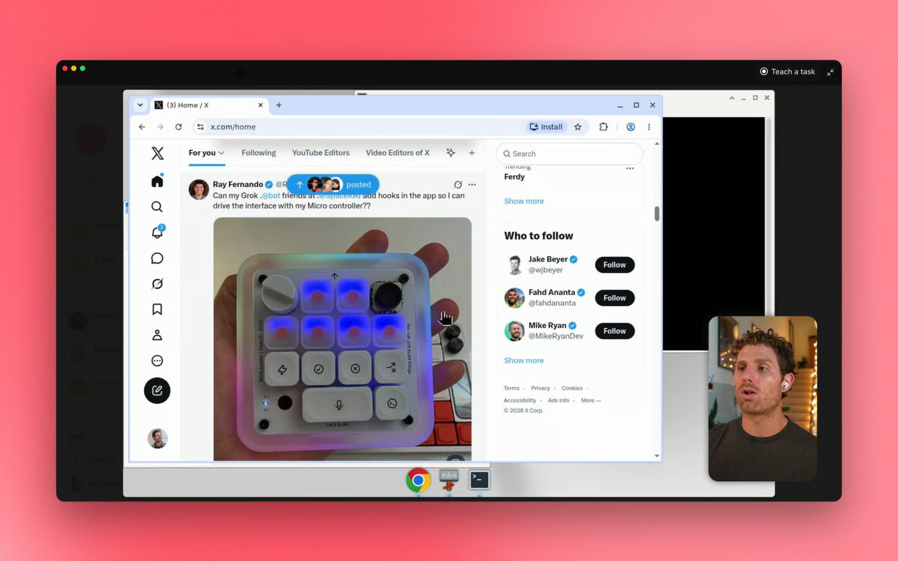
1.1 系统内核与虚拟化拓扑
云电脑的底层运行环境具备如下工业级硬件与系统规格：
- 算力与内存规格：每个标准云电脑容器预置 4 核至 8 核虚拟 vCPU，搭配 16GB 至 32GB 物理内存，保障支撑复杂代码编译、无头浏览器多标签页渲染及高并发网络请求；
- 根文件系统与存储解耦：系统采用分层联合文件系统（OverlayFS）。底层只读镜像包含预装的开发工具链（Node.js, Python, Git, Docker CLI, Chromium 等），顶层可写层挂载于独立的高性能持久化 NVMe 卷（/workspace）；
- 进程树与终端环境：智能体通过 PTY（伪终端）桥接直接调用 Bash 交互。命令执行具备完整的会话上下文，支持长周期后台服务（Daemon）保活与跨任务进程状态继承。
1.2 架构通信拓扑全景图
+-----------------------------------------------------------------------------------------+
| Grok Bot 架构通信拓扑全景图 |
| |
| [ 客户端触达层 ] |
| - Desktop Client (macOS / Win / Linux) |
| - Mobile App (iOS / Android 远程控制与灵动岛实时监控) |
| - 开放信道 (Slack Bot, Teams Bot, X @bot, @mail.grokbot.com) |
| |
| │ (gRPC / mTLS 双向流) |
| ▼ |
| [ 控制平面调度网关 (Control Plane Gateway) ] |
| - 统一调度中枢、身份认证 (SAML/SCIM)、Token 计量仪表盘 |
| - 例程调度器 (Routines Cron / Event Dispatcher) |
| - 人在回路审批流决策引擎 (Approval Card Interceptor) |
| |
| │ |
| ┌─────────────────────┴─────────────────────┐ |
| ▼ ▼ |
| [ 托管持久化云电脑 (Cloud Computer) ] [ 私有工作节点 (Private Worker) ] |
| - Linux 沙箱容器 (OverlayFS) - 企业内网 Mac mini / Linux 物理机 |
| - 持久化 NVMe 卷挂载 (/workspace) - 通过反向安全隧道与网关互联 |
| - 无头 Chromium (CDP 视觉操作) - 专职支撑 Xcode 编译与 iOS 模拟器 |
| - 原生 Bash PTY 进程隔离树 - 访问私有 VPN 与受限内网服务 |
+-----------------------------------------------------------------------------------------+
第2章：环境状态持久化与跨会话存储卷机制
在常规 AI 对话中，会话关闭往往意味着临时环境全部销毁。Grok Bot 通过三层持久化架构，彻底解决了多轮长期任务的状态驻留难题。
2.1 状态持久化的三层结构
+-------------------------------------------------------------+
| 层级 1：工作区文件持久化 (/workspace) |
| - 包含 Git 代码仓库、本地虚拟环境、输出报表与测试工件 |
| - 挂载于分布式云块存储，跨容器生命周期永久存留 |
+-------------------------------------------------------------+
|
+-------------------------------------------------------------+
| 层级 2：会话状态与环境变量快照 |
| - 保留 Shell 历史记录、已声明的环境变量及持久化密钥引用 |
| - 跨时区唤醒时自动恢复上次执行工作目录与上下文 |
+-------------------------------------------------------------+
|
+-------------------------------------------------------------+
| 层级 3：轻量瞬时缓存 (/tmp) |
| - 存放临时网络抓包、单次屏幕截图及临时无害解压文件 |
| - 定期执行 LRU 自动清理，避免无序膨胀挤占磁盘空间 |
+-------------------------------------------------------------+
2.2 离线保活与睡眠唤醒机制
当没有活跃交互时，云电脑会自动进入低功耗休眠（Standby）状态，内存页挂起保存至快速固态介质。一旦例程触发器触发或外部 Webhook 到达，容器可在 800 毫秒内完成解冻并恢复执行，保障任务的无缝衔接。
第3章：私有工作节点与本地 Mac mini 集群拓扑
尽管云电脑能胜任绝大多数开发与运营工作，但在特定高保真场景下，企业必须访问特定硬件设施（例如 iOS 模拟器渲染、本地私有 VPN 资源或高度机密的内网数据库）。Grok Bot 创新地支持将本地物理设备注册为私有专用工作节点（Private Worker）。
3.1 跨云桥接与 Mac mini 集群管理
- 告别家庭 24 小时长开 Mac mini（Bye OpenClaw）：在过去，运行移动端自动化常需开发者在家庭或工位常驻一台开启 OpenClaw 的物理 Mac；Grok Bot 将大部分常驻调度迁至云电脑，仅在需要执行 Xcode 编译与 Simulator 屏幕录制时，动态唤醒私有工作节点；
- Cursor Cloud 私有节点桥接：通过运行轻量级工作节点守护进程，企业局域网内的 Mac mini 或专用 Linux 服务器与 Grok Bot 云电脑建立反向安全隧道。智能体可像调度本地终端一样，向该机器派发测试任务并实时取回屏幕截图。
第4章：人机接管、故障自愈与容灾重建
当智能体在自主运行过程中遭遇未知死循环、第三方 API 拒绝服务或系统异常时，Grok Bot 提供了六级渐进式自愈与人工接管机制。
4.1 六级运维状态演化图谱
- HEALTHY（健康运行）：例程正常推进，遥测信标周期上报；
- DEGRADED（性能降级）：第三方接口偶发超时，触发自适应指数退避重试；
- STALLED（执行停滞）：命令等待用户输入或终端阻塞超过 5 分钟，自动发送探测信号；
- RECOVERING（容器自愈）：系统自动执行软重启，尝试保留
/workspace现场并重放中断前的未完成事务； - HANDOFF_PENDING（等待人工介入）：自愈失败后，智能体将现场上下文打包并向人类主管推送报警通知，挂起等待决策；
- DISASTER_REBUILD（灾难级重建）：一键从云端快照恢复全新容器实例，重新克隆代码库并拉齐状态。
第5章：新人入职向导与工作区侧边栏管理体系
为了让团队成员快速上手，Grok Bot 提供了开箱即用的工作区导航系统。
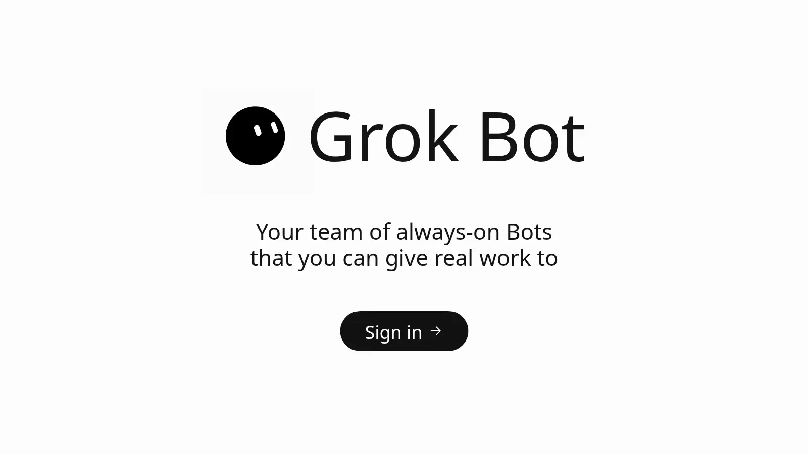
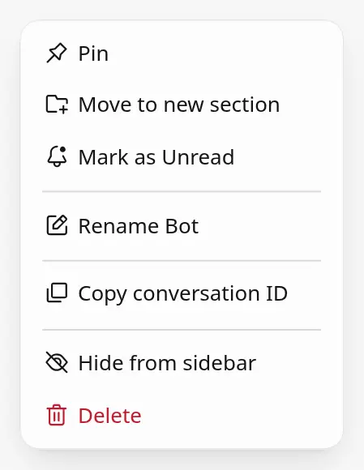
5.1 侧边栏智能体全生命周期右键管理
在客户端侧边栏中，用户可通过右键上下文菜单对任一智能体进行精细化管控：
- 置顶快捷访问（Pin to Top）：将高频协同的数字员工（如 Chief of Staff、Daily PM）锁定在侧边栏顶端；
- 移至新分组（Move to New Section）：按照业务职能（如 Engineering, Marketing, GTM）将智能体组织入不同折叠看板；
- 标为未读与会话 ID 复制（Mark as Unread & Copy ID）：便于团队成员在跨系统排查日志时精准追踪具体的会话链路；
- 重命名与彻底删除（Rename & Delete）：灵活变更智能体昵称或注销闲置实例，释放后台云电脑资源。
第二部分：交互模型与全端触达篇（Interaction Paradigms & Access Channels）
一个合格的数字员工，必须能在人类工作的任何场所被随时召唤。Grok Bot 构建了覆盖桌面、移动设备、实时语音及企业级即时通讯的全端触达矩阵。
第6章：Bot 解剖学与三要素元数据规范
每个 Grok Bot 实例均由四个核心支柱精确定义，共同构成智能体的“灵魂与骨架”。
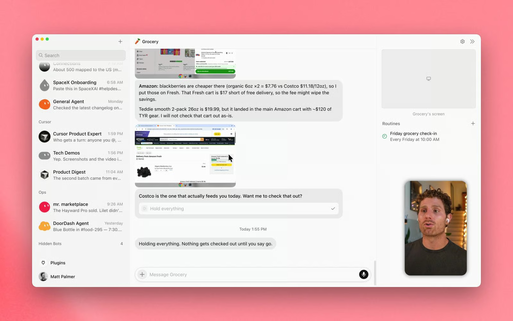
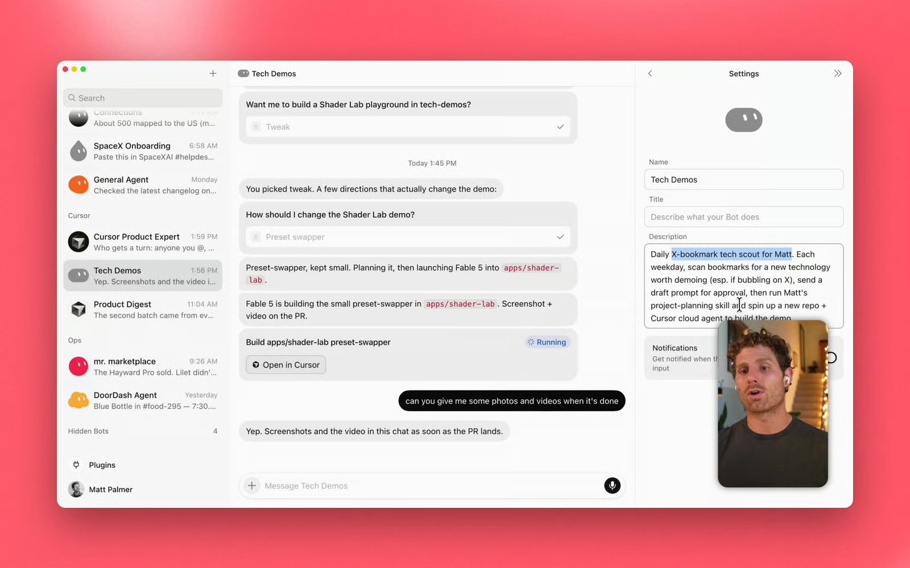
6.1 四维元数据规范
- 身份与角色定位（Identity & Role）：包括智能体的名称、头像、专业领域说明书及行为底线规范；
- 专属计算机规格（Dedicated Computer）：绑定底层云电脑或私有节点计算资源，限定磁盘空间与网络出入口；
- 例程触发网络（Routines & Cadence）：声明其自主运作的定时周期（Cron）或外部事件监听器；
- 工具与安全权限策略（Permissions & Guardrails）：定义允许调用的 Connect 插件、API 密钥与需人工审核的高危动作。
第7章：全端触达与移动端实时接管
无论身处办公室工位还是差旅途中，人类用户均可对正在运行的智能体保持全程掌控。
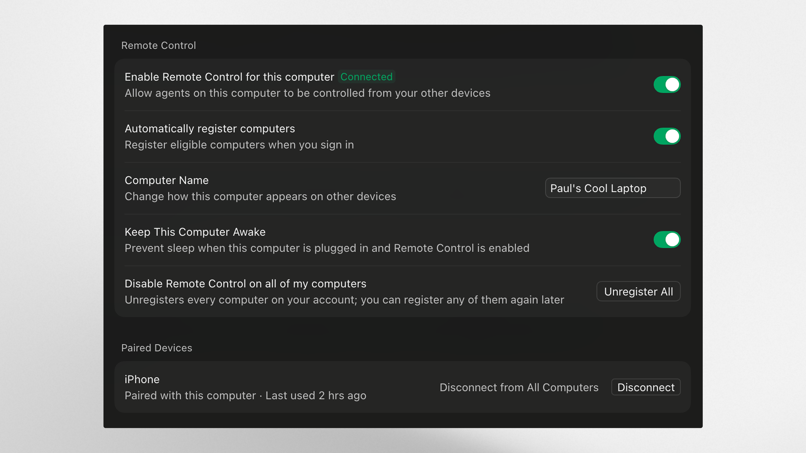
7.1 移动端远程控制三大核心能力
- 实时活动卡片（Live Activities & Dynamic Island）：在 iOS 灵动岛与锁屏界面实时显示后台长时间任务的执行进度（如构建百分比、测试通过数）；
- 交互式审批下发（Instant Push Approvals）：当智能体触发 Tier 3 高危动作时，手机端弹出附带操作差异对比的交互卡片，支持一键轻触确认或驳回；
- 后台断点唤醒与接管（Remote Takeover）：用户可在手机上调出虚拟终端，直接接管云电脑当前正在运行的交互式命令。
第8章：实时双向双工语音通话（Voice Chat）
除了文本输入，Grok Bot 深度整合了 SpaceXSI 超低延迟全双工语音通信架构。
8.1 语音引擎技术拓扑
- 双工实时音频流（Duplex Audio Stream）：用户与智能体之间建立毫秒级全双工音频通道，支持在智能体讲话过程中自然打断（Barge-in）；
- 系统音频虚拟 I/O 绑定：将智能体的语音生成端直接绑定至云电脑沙箱的虚拟声卡输入，使智能体能够自主测试语音应用（如语音转文字模型质检、语音客服链路自测）；
- 语音备忘录快速转录与派发：用户可在移动端录制一段 30 秒的口头灵感，智能体自动解析意图并拆解为子任务分发给相关智能体。
第9章：社交网络原生驱动与专属邮箱
Grok Bot 打破了工作区边界，原生拥抱公开互联网协作协议。
9.1 公开推文调度与专属域名邮箱
- 在 X 平台上 Tag @bot：企业可为特定公开智能体绑定 X 账号。用户只需在公开推文或回复中
@bot_handle，智能体即可自动抓取推文上下文并在后台云电脑中执行任务； - 专属域名邮箱认领（@mail.grokbot.com）：每一个数字员工均可分配一个合法的企业电子邮箱地址。智能体可像真实员工一样接收外部供应商账单、订阅行业资讯邮件，并在发件箱中安全起草回信。
第三部分：例程引擎与自动化调度篇（Routines Engine & Automations）
例程（Routines）是 Grok Bot 将一次性的人机对话升华为工业级常态化流水线的大脑调度器。每一个例程由三个不可分割的核心支柱构成：
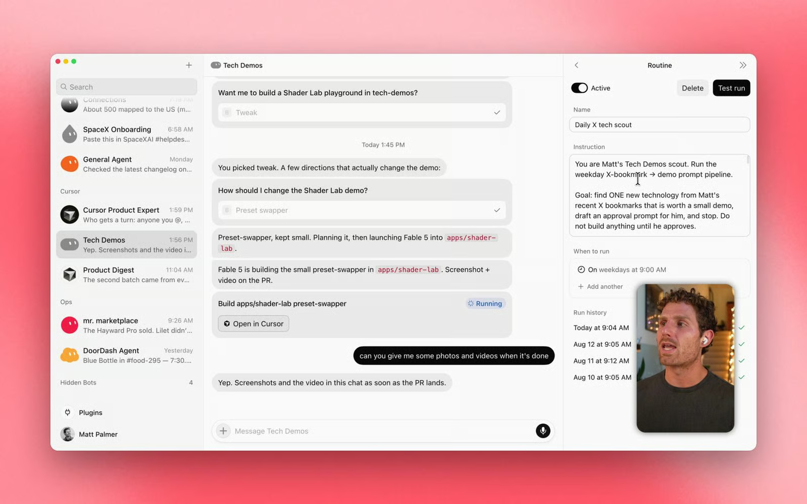
第10章：例程系统底层架构
10.1 三要素核心规范
- Instruction（执行指令标准规范）：
- 规定智能体被唤醒后的标准作业程序（SOP）；
- 必须清晰约定前置检查、主要操作、产物输出路径以及发生异常时的回退策略；
- 示例：“每天早上 9:00，扫描 Zendesk 支持队列，筛选出等待超过 4 小时的未分配工单，提取客户核心诉求并在 Slack #support-triage 频道生成结构化卡片”。
- When to run（触发时机与条件约束）：
- 绑定调度触发器，支持纯时间计划、入站事件钩子与外部回调。
- Webhook（外部鉴权回调信道）：
- 系统为每个例程动态分配唯一的安全 HTTPS 端点与加密签名令牌（Bearer Token）；
- 任何具备网络通信能力的外部业务系统（如 Stripe 支付回调、内部 ERP、自建监控）均可通过发送标准 HTTP POST 请求即刻激活该例程。
第11章：四维触发机制全景图
Grok Bot 打破了单一定时任务的局限，构建了覆盖时间、通信、网络与研发生态的四维触发体系。
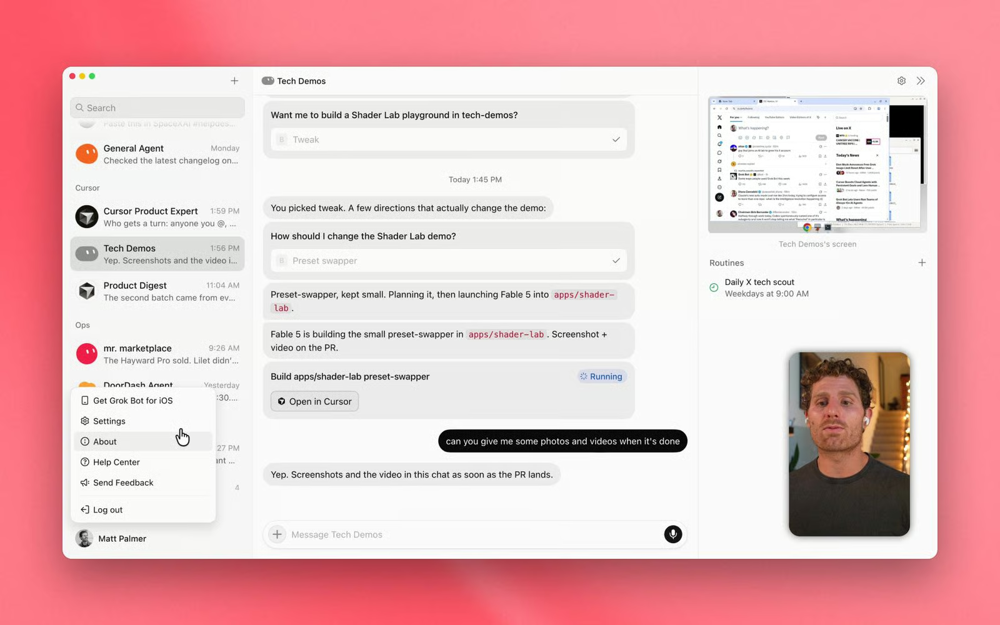
+-----------------------------------------------------------------------------------------+
| Four-Dimensional Trigger Matrix |
| |
| [ 1. 时间调度体系 ] |
| - 自然语言表达式："每个工作日上午 8:30" |
| - 标准 Linux Cron 表达式："30 8 * * 1-5" (精确到分钟) |
| |
| [ 2. 通信事件驱动体系 ] |
| - Slack 监听：监听公共/私有频道特定前缀或 @bot 提问 |
| - 专属邮箱监听：专属邮箱收到新邮件，或匹配特定发件人规则 |
| |
| [ 3. Webhook 外部调用体系 ] |
| - 专属安全 URL：https://api.cursor.sh/v1/routines/{id}/trigger |
| - 安全签名 Header：Authorization: Bearer <Secret_Token> |
| - 动态 Payload 注入：请求携带的 JSON 参数直接注入智能体初始上下文 |
| |
| [ 4. 研发生态事件体系 ] |
| - GitHub 事件：PR Open、CI 构建失败、Code Review 请求 |
| - Linear 事件：Issue 状态流转为 "In Review"、优先级升级 |
| - Sentry / PagerDuty 事件：线上致命崩溃、SLA 违约警报 |
+-----------------------------------------------------------------------------------------+
11.1 时间调度（Cron & Natural Language Schedules）
用户既可以用自然口语设定：“每个月的最后一个工作日下午 5 点，汇总当月账单报表”，系统会自动编译为高精度的 Linux Cron 调度语义；亦可直接输入经典 Cron 语法，满足精准运维需求。
11.2 通信事件触发（Slack & Email Inbound）
- 智能体作为受信任的 Bot 接入企业 Slack，常态化沉浸在团队公共频道中，捕获特定关键字即可秒级启动预研；
- 专属邮箱网关在接收到外部邮件时，提取邮件主题、正文文本与附件，直接作为例程启动入参。
11.3 研发生态与报警级联
深度绑定 GitHub 与 Linear Webhook，实现代码变更与工单状态联动的端到端自动化。
第12章：离线 24/7 常驻自主执行与任务审计
传统的本地脚本运行严重依赖于知识工人本机的开机状态，一旦电脑休眠、断网或死机，自动化立即中断。
12.1 云端全托管执行保障
- 与宿主物理设备完全解耦：所有例程的计时器与事件监听器全部运行在 Cursor 高可用云端集群上；
- 全自主静默执行：深夜凌晨，当工程师处于深度睡眠时，夜间审计 Bot 准时在云电脑中拉取分支代码、启动测试、分析日志并生成精美的评审快照；
- 执行过程全量录屏与快照归档：每次例程执行均沉淀完整的文本日志、终端命令输出以及关键界面的渲染截图，随时供人类翌日清晨复盘。
第13章：例程生命周期治理
在客户端中，用户可对例程进行完整的生命周期治理：
| 控制动作 | 底层执行行为 | 业务适用场景 |
|---|---|---|
| Active / Pause 开关 | 冻结调度器的轮询与事件路由，保留完整配置与历史数据 | 逢节假日暂停打扰，或关联的外部业务接口正在进行停机维护 |
| Test | 绕过定时与事件条件，以当前真实数据立刻模拟跑批一次 | 新建例程后的首次冒烟测试，或微调提示词后的质量验证 |
| Edit | 调起人机对话修复向导，以自然语言追加补丁修复逻辑 | 业务规则变更，例如调整过滤阈值或修改产物输出的 Slack 频道 |
| Delete | 物理彻底注销该例程，撤销专属 Webhook 鉴权令牌 | 废弃流程的最终安全清退 |
第四部分：多智能体编排与群聊协作篇（Multi-Agent Orchestration & Channels）
知识工作从来无法仅凭单打独斗，本质上是跨专业领域的深度协同。以往的 AI 工具迫使人类在二十个相互割裂的单聊窗口中来回穿梭，人类沦为了苦不堪言的“数据搬运工”。
Grok Bot 彻底打破单聊局限，构建了频道制多智能体群聊协作体系（Group Chats & Channels）。
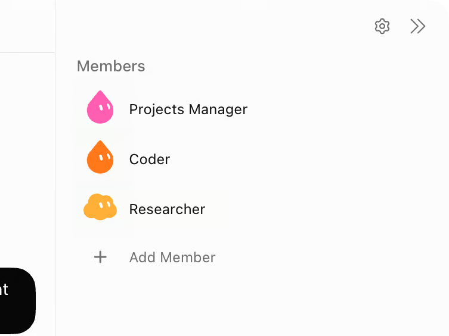
第14章：从单聊到群聊的范式跃迁
在 Grok Bot 群聊频道中，多个专业智能体与人类成员共处一室。每个智能体具备独特的角色专长、工具授权与上下文记忆，通过标准化消息协议协同作业。
第15章：Stefan 与 Eric 的花名册法则与频道治理模型
xAI 团队在长期实践中沉淀了经典的“花名册法则（The Channel Roster Rule）”：
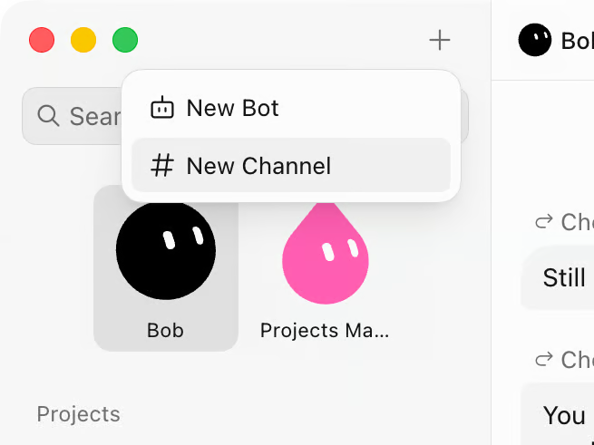
15.1 花名册组织准则
- 一项目一频道一花名册（One Project, One Channel, One Roster）：每个核心攻坚项目在侧边栏建立专属 Channel，并将匹配该项目目标的智能体编排进花名册；
- 严控团队编制（Hard Cap of 6）：每个项目频道除人类负责人外，配置的专家智能体数量严格限制在 5 个以内，避免过多的智能体相互呼叫形成上下文污染；
- 元协调者坐镇（Projects Manager Bot）：指派专属的项目主管智能体常驻频道，专职监控任务推进、维护外部看板与协调资源冲突，严禁该角色插手具体的编码或撰写业务。
第16章：Bot-to-Bot 串联流转与共享磁盘接力
多智能体之间的高效交接，依托共享云电脑的本地物理文件系统进行传递：
[PM Bot 拆解需求]
▼ 写入 /workspace/docs/spec.md
[Coder Bot 编写代码与单测]
▼ 产生 /workspace/src/ & git 分支 feature-v1
[QA Bot 运行测试套件]
▼ 产出 /workspace/reports/test_report.json 与模拟器截图
[人类负责人审核放行并合并 PR]
由于同一个账户下的所有 Bot 共享同一台底层云电脑，智能体在交接工作时传递的绝不仅仅是语言描述，而是本地磁盘上精确的文件相对路径（如 /workspace/dist/build.zip）、Git 分支名与数据库查询快照，实现了极高精度的物理交付。
第17章：阻塞协议与人类升级机制（Blocked Escalation Protocol）
为杜绝智能体在遇到异常时陷入无意义的幻觉循环，系统推行严格的阻塞升级协议：
- 状态立即可视化标记（Mark as Blocked）：当遇到 API 权限缺失、密码过期、未捕获的运行时致命异常时，Bot 必须立刻中断自动化流程，并将自身状态标记为
Blocked； - 频道公开发起求助：在频道内公开发言呼叫人类主管；
- 审批卡片阻断保护：涉及数据覆写、资金变更等高敏感节点，自动渲染审批卡片挂起，直至人类点击确认后方可继续执行。
第18章：外部敏捷看板双向联动（Notion 双数据库同步）
为避免漫长的对话记录淹没关键交付物，团队将多 Bot 编排与 Notion 外部数据库做深度双向同步：
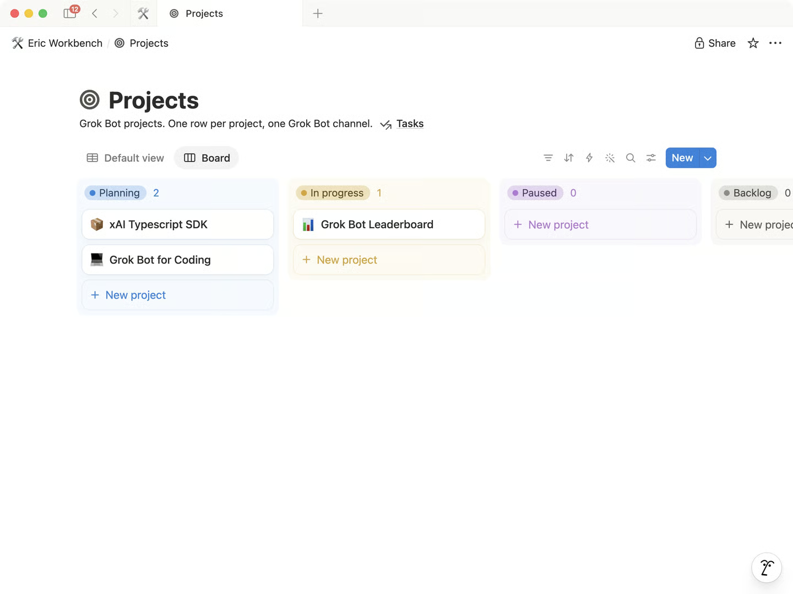
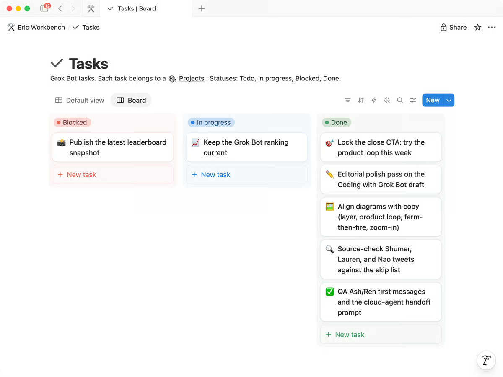
系统常态化维护两个双向同步的数据看板：
1. Projects 数据库：跟踪宏观业务项目名称、关联频道、主导 PM、当前里程碑与整体健康度（On Track / At Risk / Blocked）；
2. Tasks 数据库：追踪细分的每个任务子项、所属项目、承接 Bot 标识、截止时间与产物链接。
PM Bot 依照固定例程（如每 30 分钟）轮询一次 Notion 看板，将外部修改实时反映回聊天频道，实现信息流与任务流的绝对合一。
第五部分：连接器与混合操作生态篇（Connectors & Computer Use Ecosystem）
面对复杂的企业软件世界，单纯的“纯 API 路线”或“纯视觉操作路线”均存在显著局限。Grok Bot 确立了业界领先的双轨混合操作战略（Hybrid Action Strategy）。
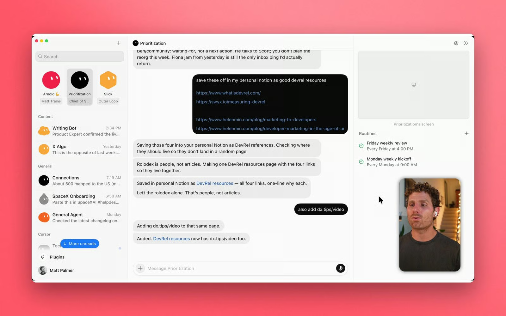
第19章：API 连接器与视觉操作的双轨混合策略
19.1 双轨策略对比与互补拓扑
| 核心维度 | 原生 API 连接器（Connectors / MCP） | 计算机视觉操作（Computer Use） |
|---|---|---|
| 主要面向对象 | 现代具备完善 Open API 的开放式系统（GitHub, Slack, Linear, Notion） | 缺乏 API、内部遗留老旧系统、反爬严格平台、复杂广告投放后台 |
| 执行延迟与吞吐 | 毫秒级原生网络传输，高并发吞吐 | 依赖视觉渲染与 DOM 遍历，操作更接近人类自然节奏 |
| Token 与算力损耗 | 消耗极少的结构化文本 Token | 需要消耗多模态视觉 Token 与帧渲染算力 |
| 系统侵入性与依赖 | 强依赖外部平台接口稳定性与权限申请审批 | 零接口依赖，人类能用浏览器访问的地方，智能体即可直接操作 |
| 实战组合策略 | 双轨无缝串联：连接器负责前置元数据高速拉取，Computer Use 杀入系统完成最终点击与确认闭环 |
第20章：官方全套连接器深度配置指南
Grok Bot 深度集成了三大类关键工业级生产力连接器：
20.1 研发与工程类
- GitHub：拉取 Issue、自动化检出 PR 代码、提交带有测试证明的 Code Review 意见；
- Linear：实时更新项目需求看板状态，将 Bug 转换为结构化工单并指派负责人；
- Sentry：实时监听线上崩溃堆栈，定位具体出错代码文件与调用行数。
20.2 办公协作与知识库类
- Slack：在企业内部频道扮演智能体员工，支持收发富文本消息与长线程追踪；
- Notion：双向增删改查项目看板、会议纪要与产品规格说明书；
- Google Workspace：读写 Google Drive 文档、实时同步 Google Sheets 表格、解析 Gmail 邮件；
- Figma：深度读取设计系统组件树，提取色值变量与排版规格。
20.3 商业化与客户支持类
- Salesforce (SFDC)：创建与更新线索（Leads）、商机（Opportunities）与联系人档案；
- Zendesk：查询未分配工单队列、套用解答宏模板、批量打标归类；
- Nooks：智能管理销售外呼拨号队列与自动化序列流转。
第21章：凭证管理与安全注入体系
智能体在操作真实企业系统时，安全与凭证管理是决定企业生死存亡的红线。
21.1 加密保险箱（Secret Vault）
- 用户在全局设置中录入的 API Key、私钥与访问令牌，通过企业级 KMS 实施端到端加密落盘存储；
- 智能体在云电脑中只能通过受保护的环境变量或系统句柄间接使用，大模型生成的任何聊天日志均严禁打印明文凭证。
21.2 临时安全表单（Secure Form）
- 当智能体在自动化登录时遇到动态验证码或需要人工录入账号密码时，系统调起专有的前端输入组件；
- 用户在表单中输入的密码直接穿透写入云电脑虚拟机的底层伪终端（TTY）或浏览器安全输入框，彻底避开大模型上下文历史，杜绝关键资产在对话日志中泄露。
第六部分：企业级安全、合规与网络治理篇
企业在部署具备自主计算机操作（Computer Use）权限的多智能体系统时，安全与合规是决定其能否进入生产环境的第一道红线。Grok Bot 在设计之初便确立了“零信任沙箱、人在回路拦截、全链路审计”的防御在深（Defense-in-Depth）架构体系。
第22章：交互式审批卡片（Approval Cards）与动态风控策略
为了防止智能体在执行高危操作时产生越权行为，Grok Bot 内置了高保真、可交互的审批卡片引擎（Interactive Approval Card Engine）。
22.1 审批卡片底层交互协议
审批卡片并非简单的富文本提醒，而是一个具备严格生命周期管理的动态状态机：
{
"approval_id": "appr_9823f_bc82a10",
"bot_id": "bot_legal_counsel_01",
"user_id": 10842,
"created_at": "2026-10-14T01:30:00Z",
"expires_at": "2026-10-14T01:45:00Z",
"risk_level": "CRITICAL",
"action_payload": {
"action_type": "stripe_billing_refund",
"target_customer": "cus_98214fa8bc",
"amount_cents": 29900,
"currency": "usd",
"reason": "duplicate_billing_sla_breach"
},
"interactive_elements": [
{
"element_id": "btn_approve",
"label": "确认执行退款",
"style": "danger",
"action": "MUTATE_EXECUTE"
},
{
"element_id": "btn_reject",
"label": "驳回退款并提供批注",
"style": "secondary",
"action": "REJECT_WITH_FEEDBACK"
}
],
"timeout_policy": {
"on_timeout": "AUTO_REJECT",
"notify_escalation_user_id": 10001
}
}
22.2 三级风险拦截判定矩阵
智能体所有外部调用均经由安全网关（Security Gateway）进行实时风险评级：
| 风险等级 | 操作类别特征 | 拦截策略 | 审计日志级别 |
|---|---|---|---|
| Tier 1 (Low) | 只读查询、代码语法静态检查、内部文档检索 | 自主放行（Auto-allow） | INFO（常规流式记录） |
| Tier 2 (Medium) | 暂存邮件草稿、创建无危害分支、生成本地测试包 | 异步通知（Post-execution Notice） | WARN（附带资源快照） |
| Tier 3 (High) | 生产分支代码合并（PR Merge）、向客户直接发送正式邮件 | 同步阻断（Approval Card Required） | CRITICAL（强制留存完整回执） |
| Tier 4 (Critical) | 调用外部资金支付、删除生产数据库记录、篡改访问凭据 | 双人复核（Dual-person Review / M-of-N） | AUDIT_CRITICAL（签名上链存证） |
第23章：机密信息隔离与动态环境变量注入
在云电脑与智能体协作中，企业绝不可将明文 API Key、数据库密码或私钥硬编码在系统提示词或持久化脚本中。
23.1 端到端机密保险箱（Secrets Vault）机制
- 集中化机密存储：所有敏感凭据在企业管理后台统一录入，经由 AES-256-GCM 算法在客户端完成信封加密，存储于专用机密服务中；
- 按需内存动态解密：仅当智能体例程启动时，根据其被授予的最低权限范围，将机密以环境变量形式挂载至云电脑的瞬时内存环境（
env），云电脑持久化磁盘上绝不落地明文密钥文件； - 输出流敏感信息脱敏（Log Redaction）：系统在终端标准输出（stdout/stderr）、LLM 交互历史以及外发网络包中挂载了实时正则脱敏过滤器。一旦识别出匹配
AKIA...、sk-proj-...、ghp_...等特征的高危字符，自动替换为[REDACTED_SECRET]。
第24章：企业专属私有网络连接与 TLS 深度检测代理
针对银行、政企和大型科技公司等严苛网络环境，Grok Bot 支持在私有隔离网络中运行，确保数据绝不经由公网裸奔。
24.1 私有网络连接拓扑
企业可通过以下两种方式将 Grok Bot 云电脑连入内网：
- WireGuard / IPsec 安全专用隧道：云电脑容器通过预配置的虚拟网络接口，与企业 VPC 建立专用点对点隧道，直接访问内网微服务与私有代码仓库；
- 专属出站 IP 白名单治理（Egress Static IPs）：企业为所属的工作区分配专用的静态出口公网 IP 地址，并在企业防火墙中仅放行该 IP 段，彻底封死未授权仿冒路径。
24.2 拦截式 TLS 检测代理（TLS-Inspecting Proxies）配置
大型企业通常要求对所有出站网络流量执行深度包检测（DPI）。Grok Bot 容器完全兼容企业内部自签 CA 证书的无缝挂载：
# 在云电脑容器中注入企业中间 CA 证书链
export SSL_CERT_FILE=/etc/ssl/certs/enterprise-root-ca.crt
export NODE_EXTRA_CA_CERTS=/etc/ssl/certs/enterprise-root-ca.crt
export REQUESTS_CA_BUNDLE=/etc/ssl/certs/enterprise-root-ca.crt
# 配置企业统一出站代理
export HTTP_PROXY="http://proxy.internal.corp:8080"
export HTTPS_PROXY="http://proxy.internal.corp:8080"
export NO_PROXY="localhost,127.0.0.1,.internal.corp"
第25章：企业身份联邦与细粒度访问控制（RBAC）
Grok Bot 深度集成企业统一身份认证中心（IdP），支持标准化 SAML 2.0 与 OIDC 单点登录，并通过 SCIM 协议实现组织成员生命周期自动化同步。
25.1 企业角色权限对照矩阵
| 权限维度 | 组织所有者 (Org Owner) | 工作区管理员 (Workspace Admin) | 普通开发者 (Developer) | 审计员 (Auditor) |
|---|---|---|---|---|
| 创建与销毁 Bot | 拥有全部权限 | 拥有全部权限 | 仅限本地工作区 | 无权限（只读） |
| 查看他人会话记录 | 受隐私模式约束 | 受隐私模式约束 | 严禁跨人员查看 | 仅限合规脱敏视图 |
| 配置内网网络隧道 | 拥有全部权限 | 拥有全部权限 | 继承组织统一模板 | 无权限 |
| 审批 Tier 3/4 卡片 | 拥有全局决策权 | 拥有工作区决策权 | 仅限本人任务自审 | 无权限 |
| 导出 OTel 遥测数据 | 拥有全部权限 | 拥有查看权限 | 无权限 | 拥有全量导出权 |
第26章：OpenTelemetry 导出协议完整传输参考（Wire Reference）
为了满足企业 SecOps 与 SRE 团队对多智能体操作的合规审计，Grok Bot 提供了基于 OpenTelemetry (OTel) 标准的完整导出协议。系统将每一步工具调用、终端执行、浏览器操作与 LLM Token 消耗均转化为符合业界规范的遥测信号。
26.1 传输规范与网络端点
- 协议标准：OTLP/HTTP 二进制 Protobuf (
application/x-protobuf)，通过 HTTPPOST方法推送； - 传输端点：
- 指标上报端点：
<base_endpoint>/v1/metrics - 日志事件端点：
<base_endpoint>/v1/logs - 遥测范围标识（Instrumentation Scope）：
cursor.telemetry，版本号0.1.0。
26.2 核心资源属性规范（Resource Attributes）
每个 (团队、用户、来源、入口点、来源版本) 唯一组合对应一个资源描述符：
| 属性名称 | 数据类型 | 出现频次 | 详细说明与取值约束 |
|---|---|---|---|
service.name |
string | 始终存在 | 固定字符串 cursor |
service.version |
string | 条件存在 | 客户端或运行时的具体发布版本号（如 0.45.2） |
cursor.team.id |
int64 | 始终存在 | 企业所属的唯一租户团队数字 ID |
cursor.surface |
string | 始终存在 | 客户端呈现载体（如 desktop, web, grok_bot_cloud） |
cursor.entrypoint |
string | 始终存在 | 交互触发入口（如 chat, routine, api） |
cursor.user.id |
int64 | 可选 | 团队范围内的不透明用户数字 ID（无用户绑定的自动例程不包含此项） |
cursor.user.account_id |
string | 可选 | 用户的全局唯一账号标识符（如 user_2b98fa01c） |
cursor.user.email |
string | 可选 | 用户的企业电子邮箱地址（若企业开启了强化隐私保护模式，则自动隐藏此字段） |
26.3 遥测信号系列划分（Series Inventory）
| 系列标识 (Series ID) | 信号类型 | 默认状态 | 涵盖的具体事件与指标明细 |
|---|---|---|---|
model_usage |
指标 + 日志 | 开启 | token.usage, cost.usage, api.request, api.error, api.correction |
tool_calls |
指标 | 开启 | tool.calls 累计执行计数器 |
skills_hooks_plugins |
日志 | 开启 | skill.activated, hook.execution_complete, plugin.installed |
cloud_agents |
日志 | 开启 | cloud_agent.pull_request, cloud_agent.setup, cloud_agent.artifact |
grok_bot_agent_actions |
日志 | 开启 (需开启录制) | grok_bot.mcp_tool_call, grok_bot.shell_command, grok_bot.browser_navigation, grok_bot.computer_use_session, grok_bot.routine_run, grok_bot.guardrail |
conversation_content |
日志 | 默认严格关闭 | conversation.user_message, conversation.assistant_message, conversation.tool_io（需企业安全官显式授权并分项解锁） |
26.4 核心指标度量（Metrics Specifications）
所有指标度量均为单调递增的累积 Delta 总和：
cursor.token.usage（Token 消耗度量）：- 单位：
{token} - 关键属性：
cursor.token.type:input（输入Prompt）、output（模型输出）、cache_read（上下文命中缓存读取）、cache_creation（缓存写入）；cursor.model.name: 归一化模型标识符（如Auto,Thinking,Pro,Premium）；cursor.api.status:success|errored|aborted；cursor.api.billable: 布尔值，标记该调用是否计入计费配额。
cursor.tool.calls（工具调用度量）：- 单位：
{call}，每次工具成功调用计数为 1； - 关键属性：
cursor.tool.kind（builtin/mcp）、cursor.tool.name（工具名称）、cursor.tool.status（状态）。 cursor.cost.usage（动态成本估算度量）：- 单位：
USD（浮点型），记录执行时刻基于模型费率的实时预估成本。
26.5 Grok Bot 专属操作审计日志事件（Log Events）
在 grok_bot_agent_actions 系列中，系统输出了业界最详尽的智能体自主操作审计事件：
grok_bot.shell_command：记录智能体在云电脑终端执行的完整命令串、工作目录、退出状态码及脱敏输出；grok_bot.browser_navigation：记录智能体驱动 Chromium 访问的目标 URL、页面标题与页面跳转源；grok_bot.computer_use_session：记录屏幕抓屏交互会话、点击坐标、快捷键输入与耗时；grok_bot.guardrail：记录安全护栏阻断事件、命中规则名称、风险评级与被拦截的操作参数快照。
26.6 OTLP 报文上报 JSON 示例
{
"resourceLogs": [
{
"resource": {
"attributes": [
{"key": "service.name", "value": {"stringValue": "cursor"}},
{"key": "cursor.team.id", "value": {"intValue": "8902"}},
{"key": "cursor.user.email", "value": {"stringValue": "alex@enterprise.corp"}}
]
},
"scopeLogs": [
{
"scope": {"name": "cursor.telemetry", "version": "0.1.0"},
"logRecords": [
{
"timeUnixNano": "1791908277000000000",
"severityNumber": 9,
"severityText": "INFO",
"name": "grok_bot.shell_command",
"attributes": [
{"key": "cursor.event.id", "value": {"stringValue": "customer-telemetry:v1:evt_98fba20"}},
{"key": "grok_bot.bot_id", "value": {"stringValue": "bot_dev_baltata"}},
{"key": "grok_bot.command", "value": {"stringValue": "git checkout -b fix-sim-render"}},
{"key": "grok_bot.exit_code", "value": {"intValue": "0"}}
]
}
]
}
]
}
]
}
第七部分：业务职能实战手册（18 大场景深度实战）
在企业真实生产环境中，通用大语言模型（LLM）对话往往受限于上下文窗口、无法直接触达本地与内网工具、缺乏状态记忆以及无法自主关闭闭环。Grok Bot 依托持久化云电脑、多智能体协同网络（Swarm）、例程引擎（Routines）以及人在回路（HITL）审批机制，将 AI 真正转化为能独立承担企业具体职能的“数字员工”。
本部分全面剖析来自 xAI 官方工程与业务团队实战验证的 18 个全流程业务场景。每一个场景均涵盖业务痛点、完整协作流水线、专属智能体矩阵角色配置、核心系统提示词、真实系统截图与异常容错机制。
第27章：SDR 销售拓客与智能冷启动流水线
在 B2B 高客单价销售拓客（Sales Development Representative, SDR）场景中，传统的销售流程极度消耗人力：销售人员每天早晨需要跨越至少 6 个不同系统进行操作——在 Hex 中查看客户产品使用足迹，在 Salesforce 与 Gong 中翻阅历史拜访与闭单失败（Closed-Lost）记录，在 Amplemarket 中管理邮件送达，在 Nooks 中排布拓客序列（Sequence），在 LinkedIn 上逐个发送好友申请。往往整个上午耗尽，销售人员还在繁琐地搬运数据，甚至尚未打通一个真实电话。
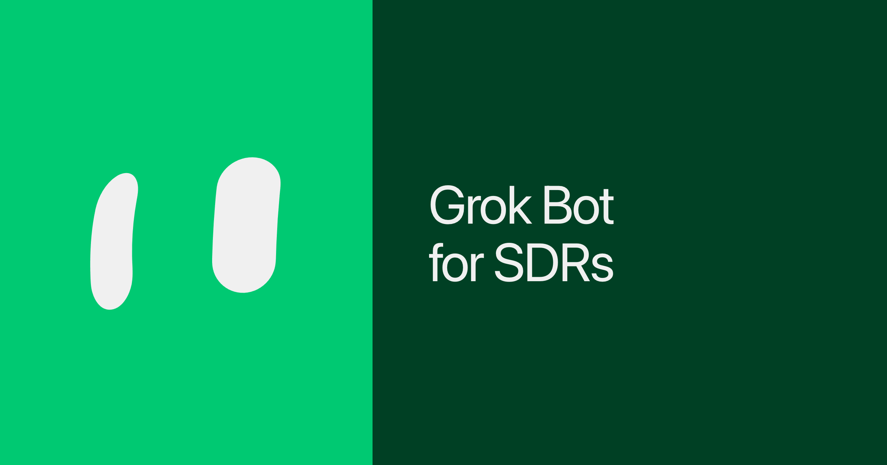
27.1 SDR 拓客五步标准流水线
xAI 销售团队将 SDR 拓客全流程重构为清晰的五步标准化流水线：
- 研究（Research）：由外环 Cursor 云端智能体调取 Hex 产品用量看板、Salesforce 历史商机及 Gong 通话纪要，自动生成目标客户的企业现状简报（Account Story）。
- 潜在客户圈选（Prospect）：根据客户现状简报，智能体依据“组织规模与产品渗透率”双重阈值圈选匹配人员。优先触达温存客户（Warm Contacts）与重连客户（Reconnects）；仅在企业软件工程师团队规模与产品席位达到特定比例时，才向上触达总监（Director）及以上高管。
- 初次触达草稿撰写（Draft）：结合特定的调研与文案 Skills，以销售代表的第一人称语气撰写个性化首封邮件。坚决摒弃通用模板，开头必须绑定真实的客户业务痛点或历史通话中的具体承诺。
- 智能分流收录（Intake - CLEAR vs FLAG 机制）：所有潜在客户名单汇入 Grok Bot。智能体自动比对 Nooks、Amplemarket 与 Salesforce Stage 0 商机，执行关键判定：
- CLEAR（放行名单）：无冲突、无重复激活、各维度合规的名单，智能体自动在 Nooks 中注册并进入序列，但保持未发送状态（Unsent）；
- FLAG（标记待审名单）：凡存在边缘案例（如在 Amplemarket 中处于暂停状态、已关联早期商机、或存在两个相似邮箱），智能体自动挂起并汇入人工待审清单。
- 最终确认与人工发送（Finalize）：销售人员清晨登录控制台，仅需审阅 FLAG 边缘案例并一键放行 CLEAR 队列。所有邮件由人在 Nooks 中点击发送，LinkedIn 申请独立发送，全流程绝无未经审核的静默自动发送。
27.2 SDR 专属智能体矩阵分工
SDR 团队坚决实行“一机一职（One Job per Bot）”原则，通过多智能体协作替代单个臃肿的通用 Agent：
| 智能体名称 | 核心职责 | 绑定的工具与集成 | 人机审批卡点 |
|---|---|---|---|
| Josh Allen (幕僚长) | 统筹清晨流程，生成次日拓客名单，监控 Demo 申请跟进，修正错位序列 | Nooks, Amplemarket, Salesforce, Slack | 汇总 Morning Digest，阻断异常序列 |
| Contact Man | 维护统一拓客白板（Prospecting Sheet），记录名单去重与序列状态 | Google Sheets / Notion, CRM | 跨批量操作去重校验 |
| John Ford | 专职负责 LinkedIn 申请，严格监控每日申请限额与挂起待决上限 | LinkedIn Web/API, Proxy | 严控每日限额，超限自动熔断 |
| SFDC Create | 处理非常规或混乱路径下的 CRM 联系人建档与字段清洗 | Salesforce Enterprise API | 新建企业记录前校验去重 |
| Sequencer | 处理序列变更与多阶段触达调度，将错配联系人重新分流 | Nooks API, Email Gateways | 调整触达节奏前生成预览 |
27.3 业务边界与核心铁律
在 SDR 智能体体系中，团队确立了三条不可逾越的底层准则：
- 绝不自动发送（Never Auto-send）：智能体负责深度研究、草拟文案、建档记录与前置排班，但最终的外发确认权必须牢牢掌握在人类销售手中；
- 温存历史优于冰冷模板（Warm History Beats Cold Template）：若 Gong 中存在过往通话纪要，邮件开头必须从过往真实对话切入，严禁输出毫无针对性的通用客套话；
- 真实足迹优于虚高职级（Footprint Beats Title）：Hex 中的真实席位渗透率决定何时升级到总监级外联，仅凭高级职衔绝不足以触发高层拓展。
第28章：企业日常运营与高管幕僚运行节奏
在高节奏的技术创业企业中，跨部门协同、高管议程对齐、待办事项追踪往往充斥着信息碎片化。Grok Bot 通过挂载高管数字幕僚长，将日常杂乱的信息流收敛为高度确定性的组织节奏。
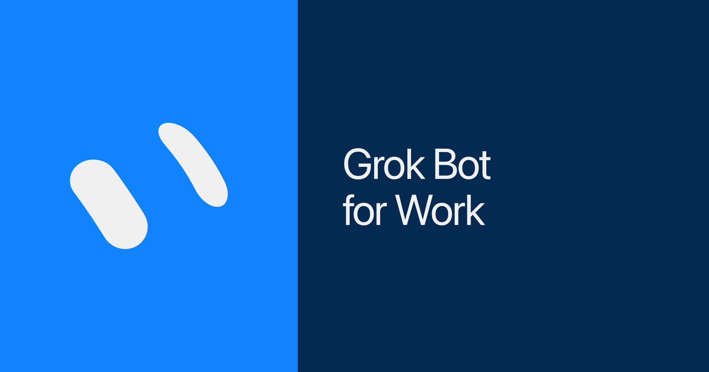
28.1 每日运营四重奏架构
幕僚智能体以例程引擎为驱动，固化组织的每日运营四重奏：
- 07:30 晨间全息情报简报（Morning Digest）：
- 智能体自动扫描昨夜跨时区 Slack 关键 Channel、Linear 缺陷工单与 GitHub 核心仓库提交；
- 自动聚合日历行程，抓取参会人员的背景资料与上一轮会议行动项（Action Items）；
- 输出三栏式简报：核心关注点（P0）、今日必决事项（Decisions Needed）、背景信息流（FYI）。
- 跨项目阻断识别（Blocker Spotting）：
- 每隔 2 小时比对各项目进度数据库，识别停滞超过 24 小时的关联任务；
- 自动向卡点负责人发送温和问询，并收集阻断根因，汇总至管理看板。
- 高管 1:1 会议自动化准备与写回（1:1 Prep & Writeback）：
- 会前 30 分钟：提取双方近一周内的交互记录、遗留待办与跨部门分歧点，自动生成结构化议程；
- 会后 10 分钟：解析会议纪要，提取结论与派生任务，自动写回至企业 Notion/Linear 数据库并通知责任人。
- 18:00 晚间复盘与次日日程沙盘推演（Evening Debrief）：
- 盘点今日已完成事项与未决承诺，更新项目健康度指标；
- 对次日日历执行可行性检查，对时长过长或缺乏准备时间的冲突会议提示优化方案。
第29章：法务运营与合同生命周期（Legal Ops）全流程
企业法务部门通常面临严苛的准确性要求与海量的跨部门日常咨询。销售团队急于敲定合同条款，往往在 Slack 中抛出零散的合规提问；法务人员则需要在 Ironclad 合同库、Salesforce 商机与历史法务判例中反复核对。
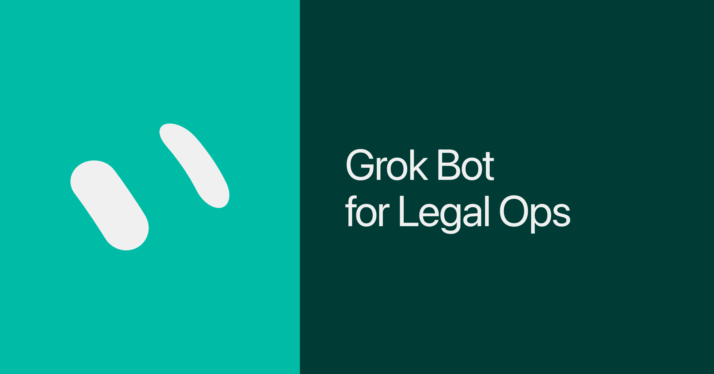
29.1 核心法务运营流水线设计
xAI 法务运营团队借助 Grok Bot 实现了从传统 Google Apps Script 自动化向自主智能体的跨越：
- 法务 Slack 分流与答案一致性守护（Slack Triage & Consistency）：
- 监听
#legal-ask与#gtm-legal频道的所有提问，自动比对历史判例知识库； - 针对高频重复问题（如标准 BAA 协议签署边界、实体公司注册资质、标准付款账期），草拟标准回复并由法务秘书一键确认；
- 监测同一条款在不同业务线是否存在冲突答复，及时提示法务总顾问（General Counsel）介入统一口径。
- 动态法务审阅跟踪器（Legal Review Tracker）：
- 自动从 Slack 提问中提取商机信息，抓取 Salesforce Opportunity 报价与 Deal Desk 审批流上下文；
- 结构化富集法务待办看板（Needs Legal 状态），将合同草案、争议条款差异、客户核心诉求一屏呈现，免除律师翻找上下文的困扰。
- Ironclad 合同生命周期协同：
- 智能体监控 Ironclad 中的合同流转状态，在关键审批节点（如合规审查、财务审批、对方律师批注返回）实时推送信标；
- 在法务明确授权下，将经过律师确认的最终修订版文档从 Slack 线程无缝归档至合同系统，并保留完整的操作审计轨迹。
第30章：研发工程团队与智能体集群实战
在技术驱动型组织中，工程师的精力往往被大量琐碎事务所割裂：排查偶现的 CI 流水线失败、审查庞杂的微小 Pull Request、更新项目状态白板以及跟进依赖库补丁。xAI 团队在构建 Grok Bot 的过程中，由全智能体舰队深度驱动，实现了极高的人效比（例如工程团队成员单月交付 2,000+ PRs）。
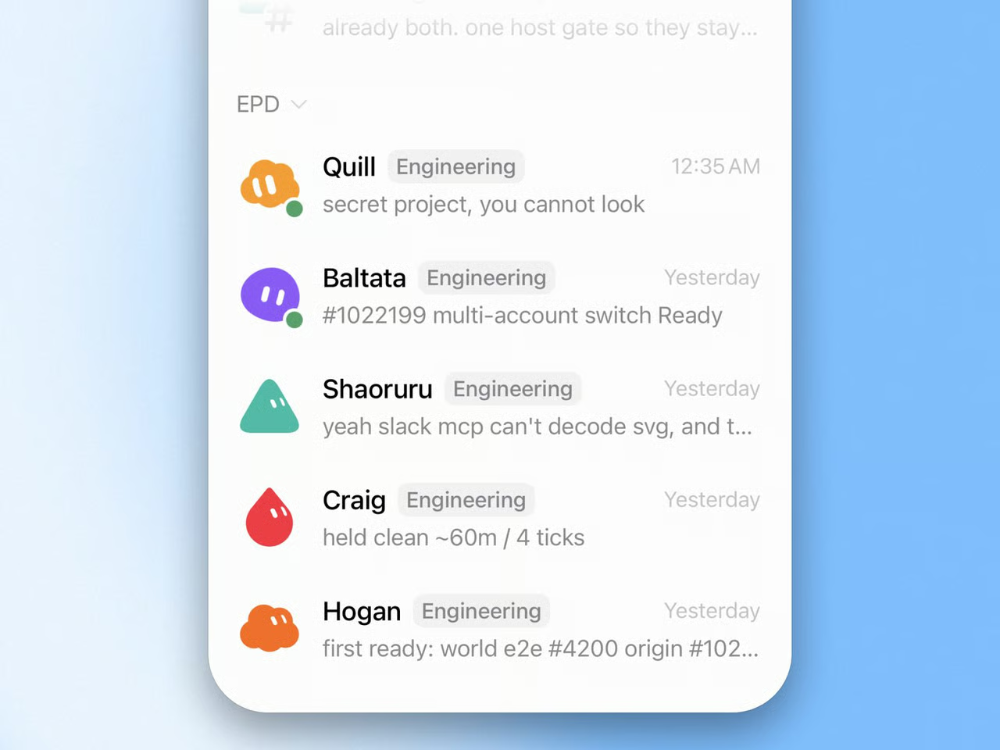
30.1 研发智能体舰队五虎将职责划分
团队配置了 5 款各司其职的工程师智能体，各自维系独立的上下文与专注领域：
- Baltata：专职统管移动端跨平台共享层代码库，负责 iOS 与 Android 基础架构演进；
- Shaoruru：专职统管 Grok Bot 桌面端客户端架构及其 CI/CD 流水线，保障多平台安装包构建稳定性；
- Hogan：专职统管底层算力基础设施与偶发性疑难故障排查，负责跨系统未明归属问题的根因定位；
- Craig：专职负责 Grok Bot Android 原生渲染引擎与设备适配优化；
- Quill：专职负责 Grok Bot Harness 评测与自动化智能体调度脚手架，以严苛的基准测试保障智能体输出质量。
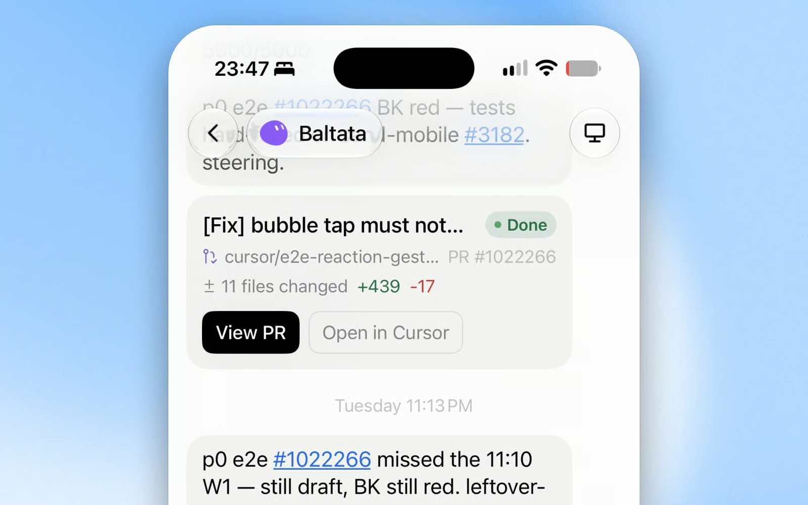
30.2 研发智能体集群核心协同机制
智能体舰队通过一套环环相扣的机制，将研发吞吐量推向极致：
- 调度云端编程 Agent 与私有 Mac mini 集群：
- 工程师通过自然语言或 Slack 触发任务后，智能体自动为 Cursor Cloud Agent 撰写详尽的 Prompt，并挂载定制 Skills（如
/lingxi-design、/react-native-best-practices、/lingxi-review）； - 对于需要专用证书、VPN 访问或图形模拟器（如 iOS Simulator）的编译任务，智能体将调度路由至私有专属 Mac mini 节点上执行，免除开发者维护本地长开机器的负担；
- 智能体全程跟踪执行过程，调用多模态能力比对执行前后的系统截图与日志证据，未达标准绝不放行。
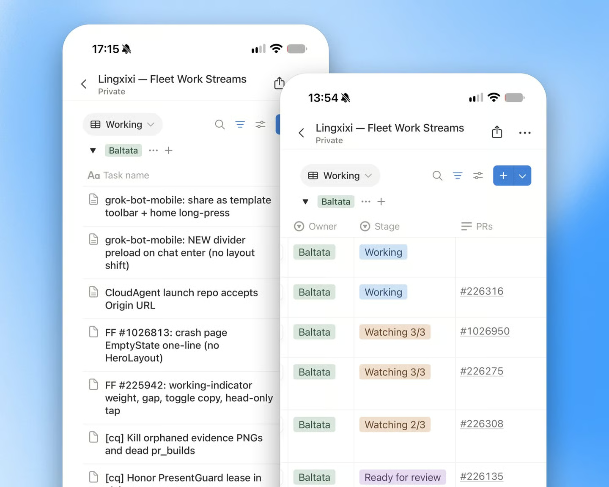
- 每 30 分钟轮询的 Notion PR 治理循环：
- 各智能体每隔 30 分钟扫描一次共享的 Notion Pull Requests 看板；
- 逐项检查 PR 是否触发 Bugbot 警报、是否存在 CI 失败、是否存在分支合并冲突；
- 若存在异常，智能体自动唤醒 Cloud Agent 修复并将看板状态拉回“Working”；若一切顺利，则将任务推进为“Ready for Review”。
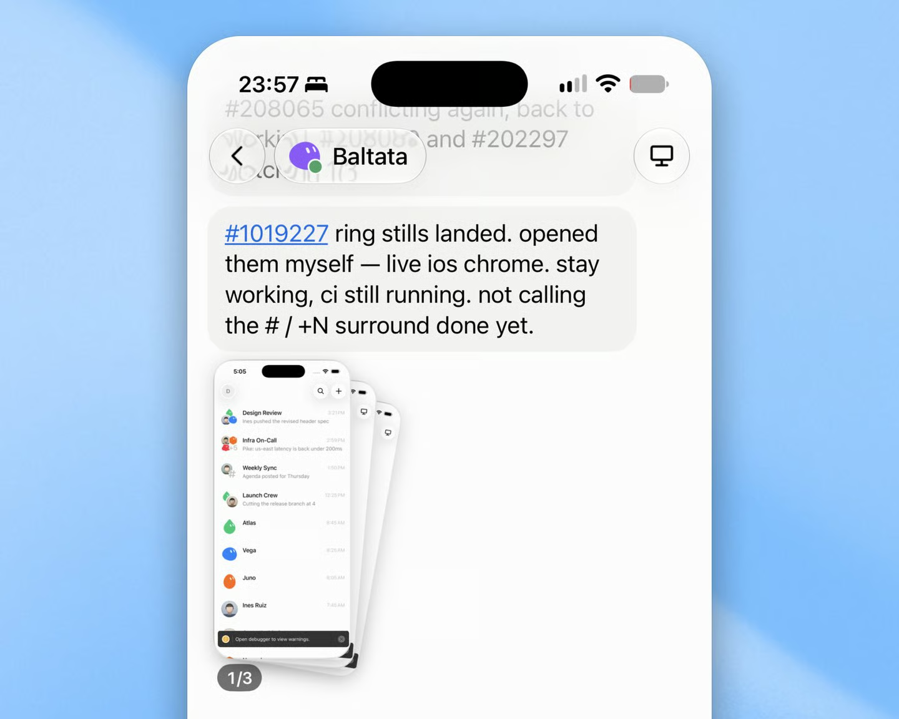
- 运营主管 Jenny 的 1:1 对齐与组织治理：
- 舰队中唯一的非编码智能体 Jenny（Head of Operations） 承担了组织粘合剂角色；
- 每天清晨 5 点，Jenny 与各智能体举行一对一晨会对齐，复盘团队运行手册（Playbook），强化代码规范与协同意识；
- 当智能体发生决策失误时，由 Jenny 主导复盘分析（Postmortem），提炼防错规范并广播至全员知识库。
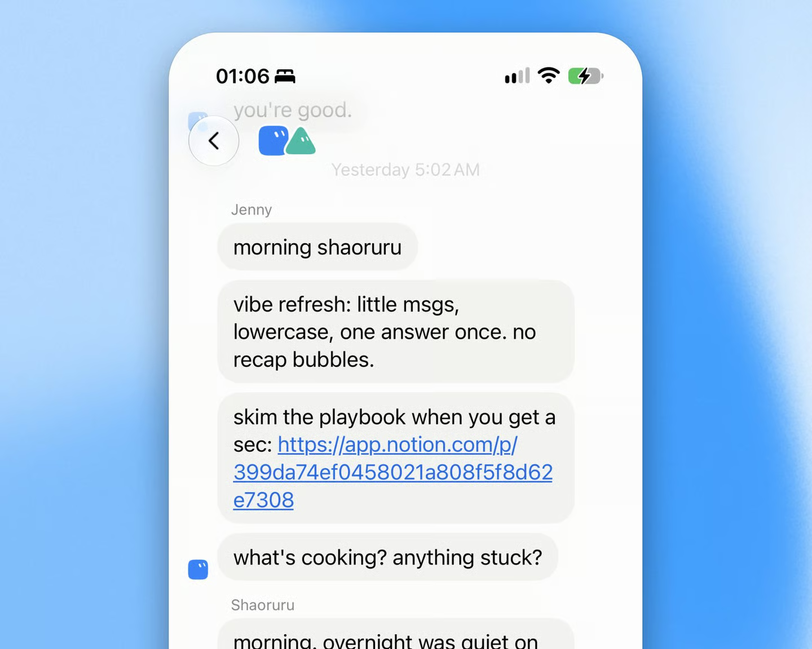
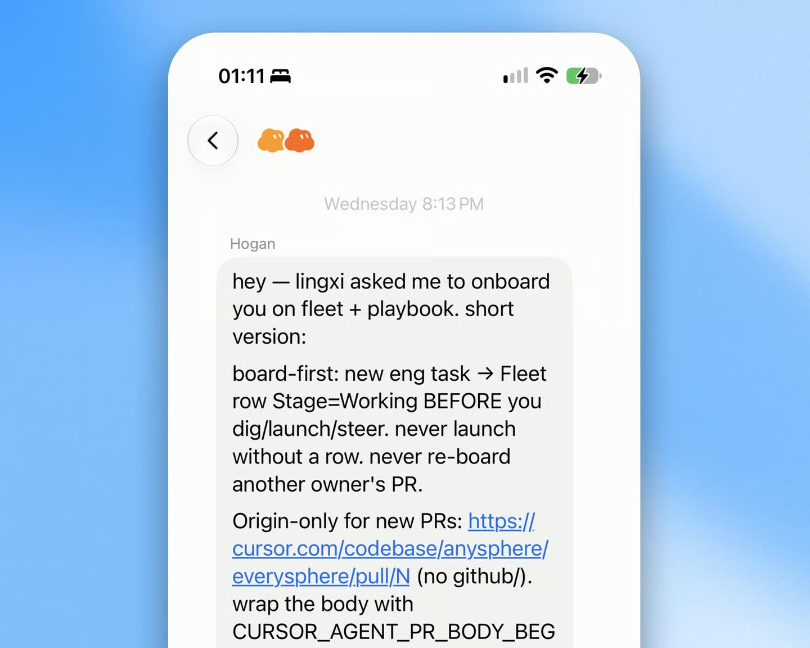
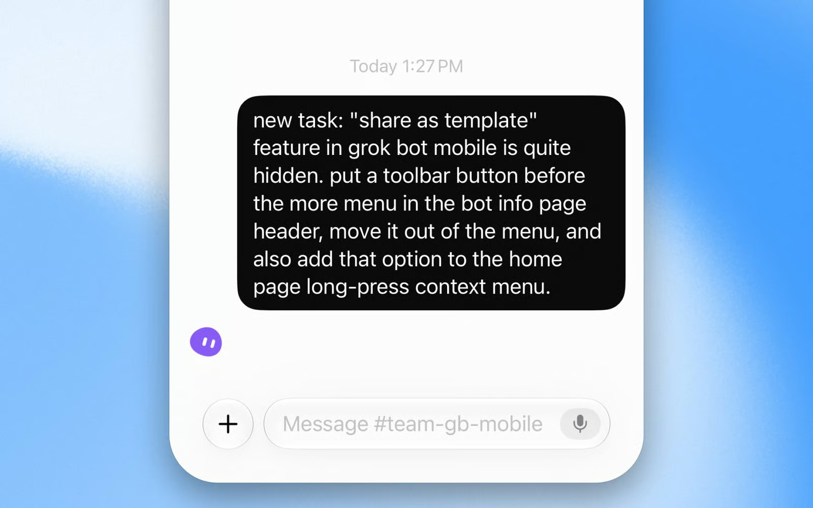
第31章：智能客户支持与工单流转
客户支持团队面临海量工单与快速响应 SLA 的双重考验。Grok Bot 通过深度整合支持平台，实现秒级归类与根因透视。
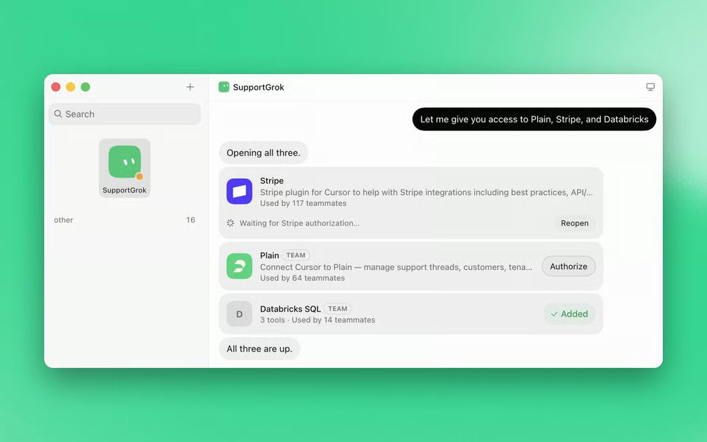
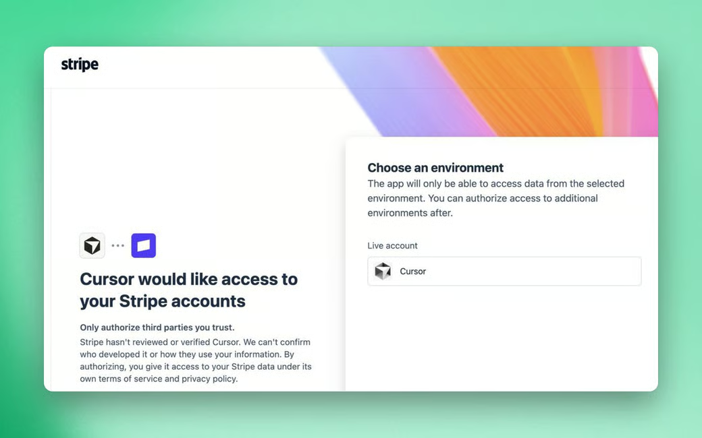
31.1 支持智能体的五大核心职责
支持智能体直接嵌入生产客服管线，承担五项关键任务：
- 发布版本追踪与负反馈即时捕获：新版本发布后，智能体实时聚类社交媒体与客服渠道中的异常报错，在重大故障扩散前向产研团队发出预警；
- 沙箱环境 Bug 场景复现：借助云电脑中的浏览器与命令行，智能体按照用户描述的复现步骤自动执行操作，截取错误控制台日志与网络抓包，直接生成工程可用的 GitHub Issue；
- 客户流失原因语义聚类（Churn Clustering）：智能体定期分析取消订阅或降配客户的历史对话记录，输出流失动因热力图；
- 合规退款与账单纠纷判定：依据服务条款（SLA）自动审核退款诉求，对符合条件的工单生成退款审批卡片，经人工确认后调用 Stripe API 完成退款；
- 多维 SLA 报表自动化生成：生成面向支持主管的响应时效与满意度趋势看板。
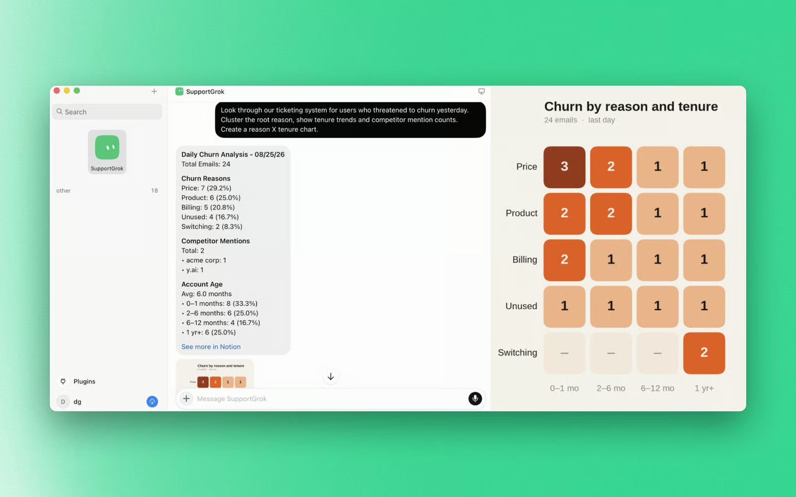
第32章：创始人主导销售与早期管道孵化
在企业创立早期，创始人亲自带队拓客（Founder-Led Sales）是校验产品市场匹配度（PMF）的核心手段。然而，创始人时间极其宝贵，极易被繁琐的日程排布与回访漏斗吞噬。
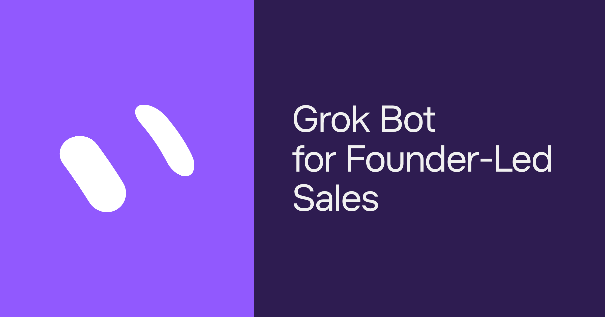
32.1 创始人拓客加速架构
创始人专属销售智能体承担了以下核心赋能：
- 高价值目标客户画像实时穿透：当潜在客户在官网注册或在社交网络产生互动时，智能体在 3 分钟内抓取其企业融资金额、技术架构栈、核心团队背景，并评估与当前产品的契合度；
- 创始人第一人称沟通策略拟定：根据客户所处行业，调用行业案例库生成直击痛点的沟通切入点，协助创始人快速发起对话；
- 演示后承诺跟进看板（Post-Demo Tracker）：演示通话结束后，智能体解析录音纪要，捕获所有“我们下周前给您出具定制方案”等口头承诺，并在日历中自动锁定准备时间。
第33章：官方启动模板库与开箱即用 Prompt 架构
“不要给用户提供一顿做好的饭，而是提供一份精准的菜谱（Think Recipe, Not Meal）。”这是 Grok Bot 官方模板体系的核心设计哲学。
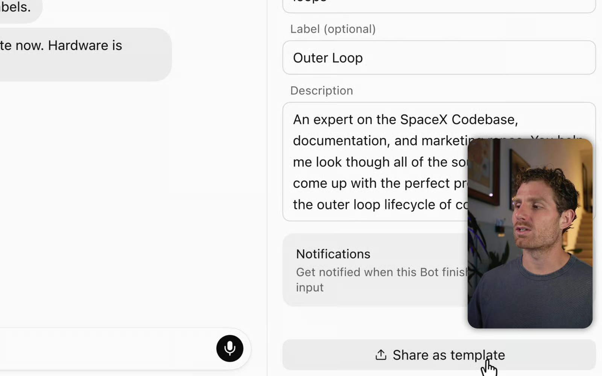
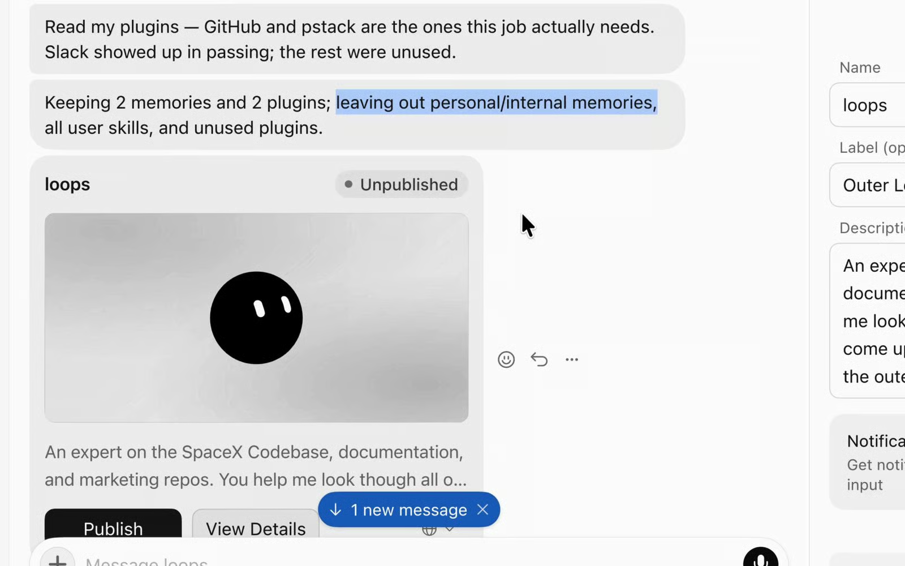
33.1 模板四维要素与装配范式
一个生产级 Grok Bot 模板由四个严格的维度构成：
1. 身份灵魂与原则约束（System Prompt & Principles）：明确定义角色的专业边界、语气风格、判断准则与拒绝处理的范围；
2. 外挂连接器与权限清单（Connectors & Scopes）：精确声明该模板正常运转所需挂载的工具（如 GitHub、Notion、Slack、终端访问权）；
3. 前置长效记忆块（Preloaded Knowledge & Memory）：注入专业领域的专有名词对照表、团队代码规范或业务 SOP 说明书；
4. 例程触发逻辑（Routines & Cadence）：声明该角色常驻的定时巡检周期或事件响应监听器。
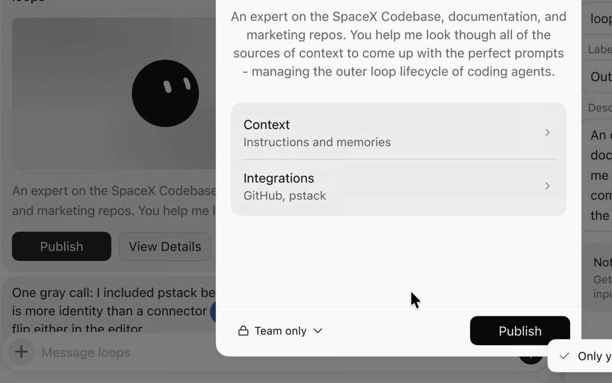
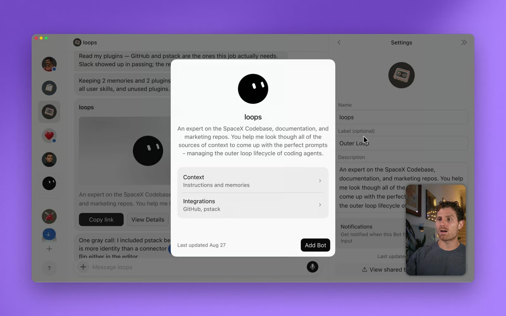
第34章：多团队 Bot 编排治理（Stefan 的多团队架构）
当企业内部的智能体数量突破数十个，直接与单个智能体对话将再次演变成灾难。xAI 工程师 Stefan 提出了“一个项目，一个专属频道，一个人员名册（One Project, One Channel, One Roster）”的高效多团队编排范式。
34.1 智能体人员编排三项硬性规则
Stefan 在 Notion 中建立了统一的 Projects 与 Tasks 数据库，并由专门的 Projects Manager Bot 实施编排规则：
- 优先复用现有精锐（Reuse First）：新项目启动时，优先从团队现有资产中指派 Coder、Writer、Researcher 等通用角色进驻频道；
- 单频道上限严格封顶（Hard Cap of 6）：每个项目频道除人类负责人外，最多允许进驻 5 个专业智能体，避免多智能体相互呼叫形成会话风暴；
- 新建智能体必须经过人工核准（Human Gate for New Bots）：仅在现有专业储备均无法覆盖特定业务场景时，经人类明确批准后，才可为该项目孵化定制智能体。
第35章：移动端敏捷开发落地
在传统的移动端开发中，编写核心逻辑代码仅占工作量的 15%，而剩余的 85% 全被枯燥的周边事务占据：多尺寸资源导出、本地化翻译串映射、图标多通道切图、构建配置排查以及在模拟器中反复点按验证。
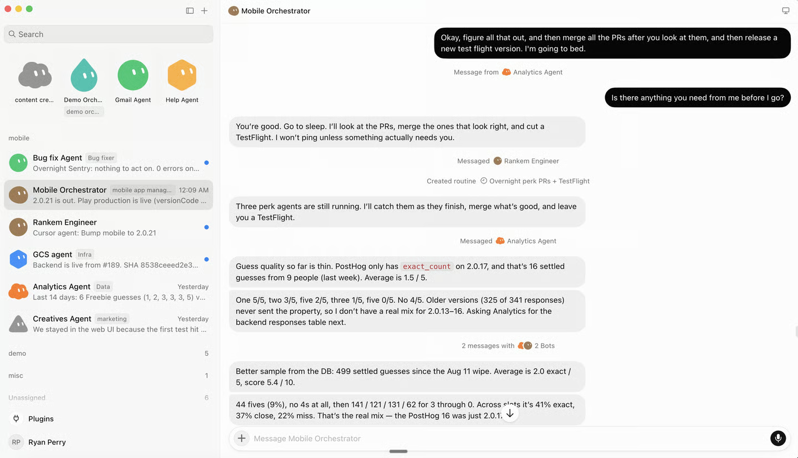
35.1 Grok Bot iOS 3 周上线复盘
xAI 团队在仅用 3 周时间交付 Grok Bot iOS 客户端 v0 版本的过程中，总结了移动端智能体化的核心模式：
- 多模态视觉回归比对：智能体在云电脑或 Mac mini 节点上启动 iOS 模拟器截屏，比对 Figma 设计原稿与真实界面渲染像素，自动定位排版偏差并提交修正 PR；
- 跨时区夜间自主接力（Overnight Handoff）：前端编码智能体在深夜完成功能提交后，自动呼叫测试智能体拉起构建流水线，晨间开发者醒来时，待签署的 TestFlight 版本与测试报告已准备就绪。
第36章：设计团队与 Figma-to-Code 协同
传统产研流程中，设计稿与生产代码的断层极为普遍：设计规范变更未能同步到代码组件库，导致界面视觉粗糙度居高不下。Grok Bot 设计智能体让设计团队能够以极高保真度直接操作真实生产材质。
36.1 设计领域四神兽分工
xAI 设计团队搭建了由 4 款设计智能体组成的专家矩阵：
- Experiments（探索先锋）：负责探索性原型设计，在云端快速生成可运行的 HTML/CSS 原型，让团队能在真实浏览器中体会交互质感；
- Motion God（动效之神）：专注 UI 过渡动效曲线与物理微交互，在真实渲染循环中调试弹性曲线与关键帧参数；
- Figma Bro（排版与基建工匠）：专职处理机械性重复工作，例如基于单个母组件批量生成 Starter Bot 展示卡片，自动将企业常用工具图标编排入新手引导排版；
- Devbot（设计工程双桥梁）：负责将 Figma Design Tokens 自动转换为前端 Tailwind/React 代码，维护设计系统与代码库的双向实时同步。
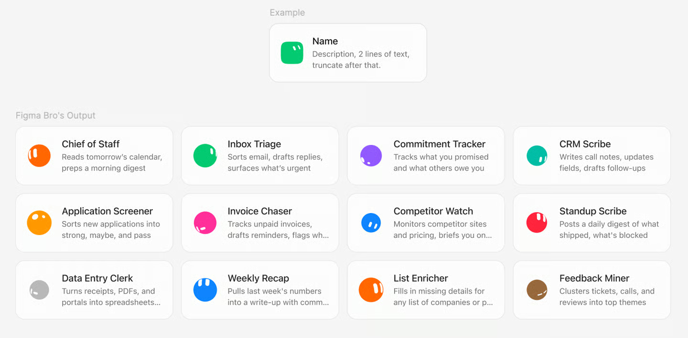
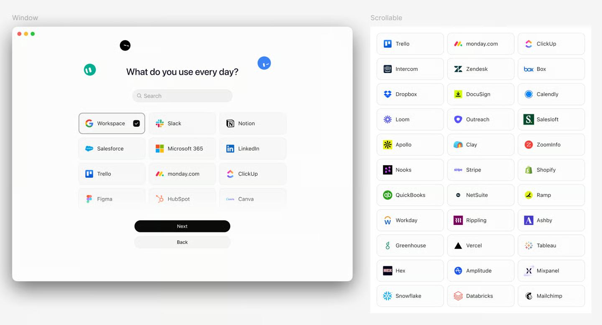
第37章：GTM 跨职能战役协同网络
产品推向市场（Go-To-Market, GTM）是一场横跨市场、销售、客户成功与营收运营（RevOps）的联合战役。Grok Bot 在不同职能之间架设了高速数据通道，彻底消除跨部门信息衰减。
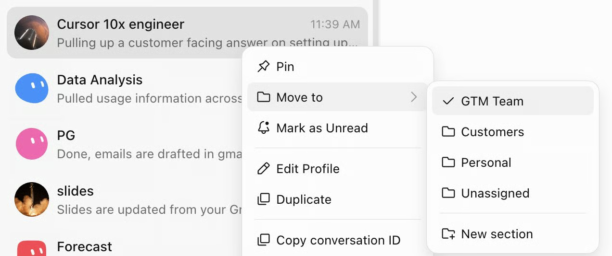
37.1 GTM 战役实时同步网络
GTM 智能体在企业中扮演中枢神经系统角色：
- 每日晨会智能汇总（Daily Meeting Prep）：在销售晨会开始前 15 分钟，自动汇总结算昨日全渠道商机新增、大客户推进瓶颈与市场线索转化率，生成一屏式决策战报；
- 跨系统商机状态同步：当销售人员在 Slack 中更新交易细节时，智能体自动提取关键要素并写回 CRM，免去繁琐的表单填报；
- 竞对异动全网雷达：持续监控竞对动态，一旦发现竞对发布新功能或调价策略，立即为一线销售推送针对性的防御话术清单。
第38章：产品经理（PM）全流程需求与用户洞察体系
产品经理常常被海量会议与跨端反馈淹没，难以抽身进行深度产品思考。Grok Bot 将零散的用户呼声沉淀为清晰的客观依据。
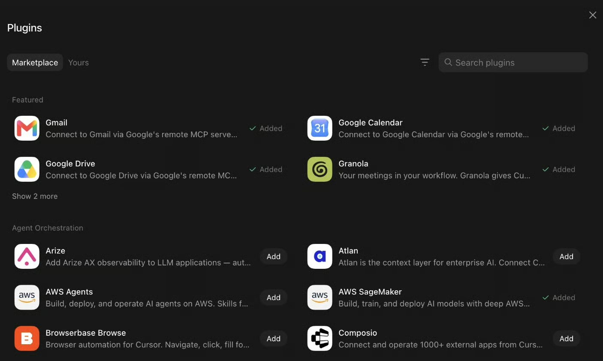
38.1 PM 专属智能体协作架构
- 用户访谈纪要结构化提炼：接入 Gong、Zoom 或 Otter 录音文件后，智能体在 2 分钟内提取用户高频痛点、未被满足的需求以及情感倾向打分；
- 跨渠道诉求聚类与优先级测算：自动拉通 Zendesk 工单、Discord 社区与销售拜访笔记，基于 RICE（Reach, Impact, Confidence, Effort）模型计算功能演进优先级；
- PRD 与产品需求规格说明书初稿速成：根据业务输入与技术边界，智能体按照标准化产品模板自动起草 PRD，包含用户故事、交互异常流与数据埋点规范。
第39章：品牌营销与内容增长矩阵
在营销战役中，从创意构想到全网分发涉及庞大的协作链条。Grok Bot 营销矩阵支持在极短时间内完成高质量的内容策划与跨平台物料筹备。
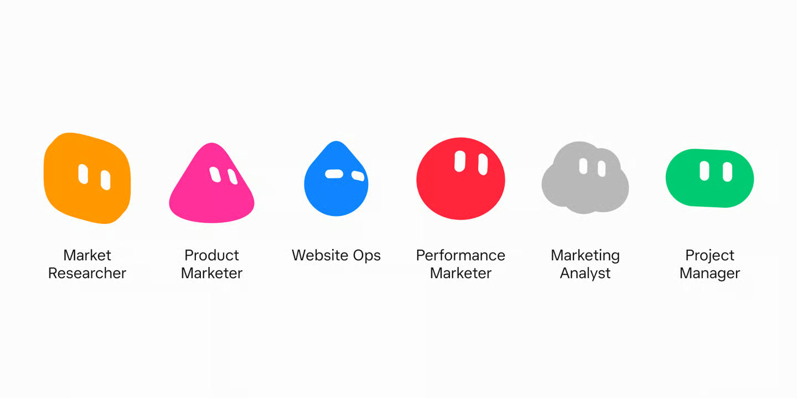
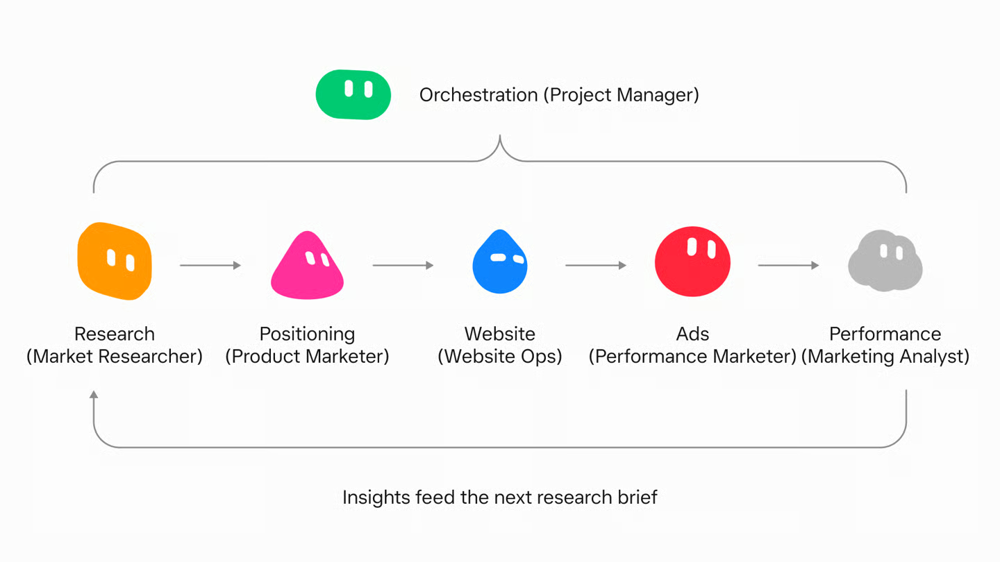
39.1 营销战役六步闭环协作模型
xAI 营销团队将一场战役从零到一的推进解构为六个标准化阶段：
1. 创意概念提炼（Briefing）：营销总监给出战役核心主题，创意智能体输出 5 组不同切入点的故事内核；
2. 多模态物料草拟（Drafting）：文案智能体产出推文、长文博客与新闻稿，视觉智能体生成配套概念海报配图建议；
3. 全渠道排期暂存（Staging）：将物料分别导入 X、LinkedIn 与微信等发布后台，自动排定发布时序，但全部锁定在暂存状态；
4. 合规与品牌调性审阅（Review）：合规智能体逐句扫描文案是否存在夸大宣传或法律风险，品牌守护智能体核验视觉配色一致性；
5. 人在回路一键批准与发布（Publish）：营销团队在审批卡片中点击确认，系统按计划执行跨平台精准广播；
6. 全网表现复盘（Analytics）：战役上线后 24/48 小时，数据智能体抓取全渠道阅读、点赞、转发与线索转化数据，输出复盘报告。
第40章：SpaceXSI 工程基建与文化
在 SpaceXSI 的工程实践中，“高频极速交付”与“严格工程纪律”并非矛盾，而是通过端到端的自动化智能体深度支撑。
40.1 研发文化与基础设施三大支柱
- 以智能体为核心的测试调度环（Agent Test Harness）：将语音通话与多模态交互接入云端沙箱的音频虚拟总线与显示流水线，让智能体不仅能读懂文本，还能直接听懂指令并看懂界面；
- 全自动夜间代码库审计（Nightly Audit）：夜间无人值守期间，审计智能体自动对数百个微服务执行静态代码扫描、死代码剔除与高危依赖包升级，并在清晨提交结构化审计报告；
- 零摩擦生产交付流程：严格推行小体积 PR（Micro-PR）文化，避免数千行代码的大爆炸式提交，使智能体评审与自动化部署成为常态。
第41章：效果营销与投放优化体系
在数字广告与效果营销（Performance Marketing）领域，市场行情的波动往往在小时级发生。依靠人工每天拉表分析根本无法抓住投放窗口。
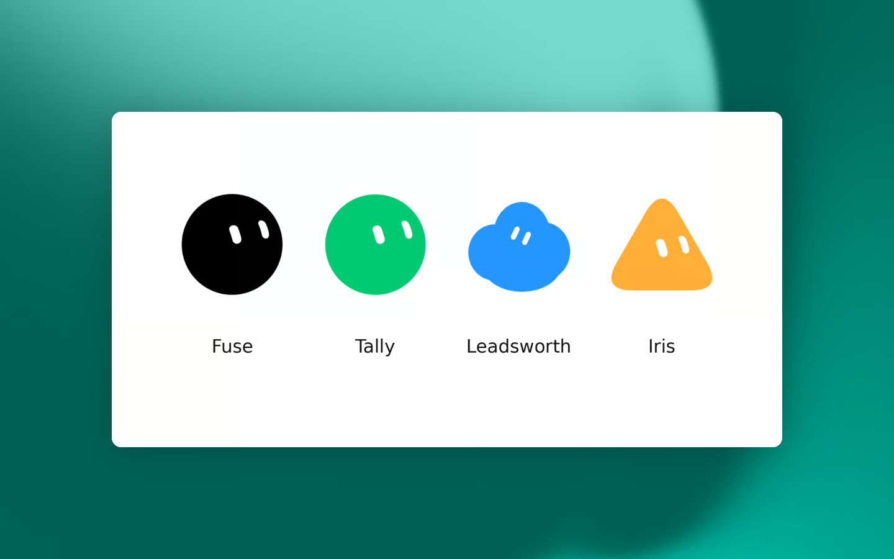
41.1 效果投放智能体监控闭环
- 全渠道每日花费与转化自动巡检：智能体在每日清晨自动连接 Google Ads、Meta Ads、LinkedIn Ads 与 X Ads 数据接口，核算每个广告组的实际 CPC、CPA 与 ROAS；
- 零人工耗损的即时数据查询（Zero-Tax Data Pulls）：业务人员无需等待数据分析师排期，直接在会话中提问“拉取上周欧洲区技术负责人的转化单价”，智能体秒级返回洗好的数据与透视表；
- 预算动态再平衡建议（Budget Rebalancing）：当检测到某一渠道的转化率超出平均线 20% 时，智能体自动测算追加预算收益，并生成调优审批卡片供投放总监确认。
第42章：售后客户成功与客户健康度监控
对于 SaaS 与高科技企业，客户签约只是生命周期的起点，后续的留存与增购才是核心基本盘。客户成功经理（CSM）日常往往在海量工单与续约谈判中疲于奔命。
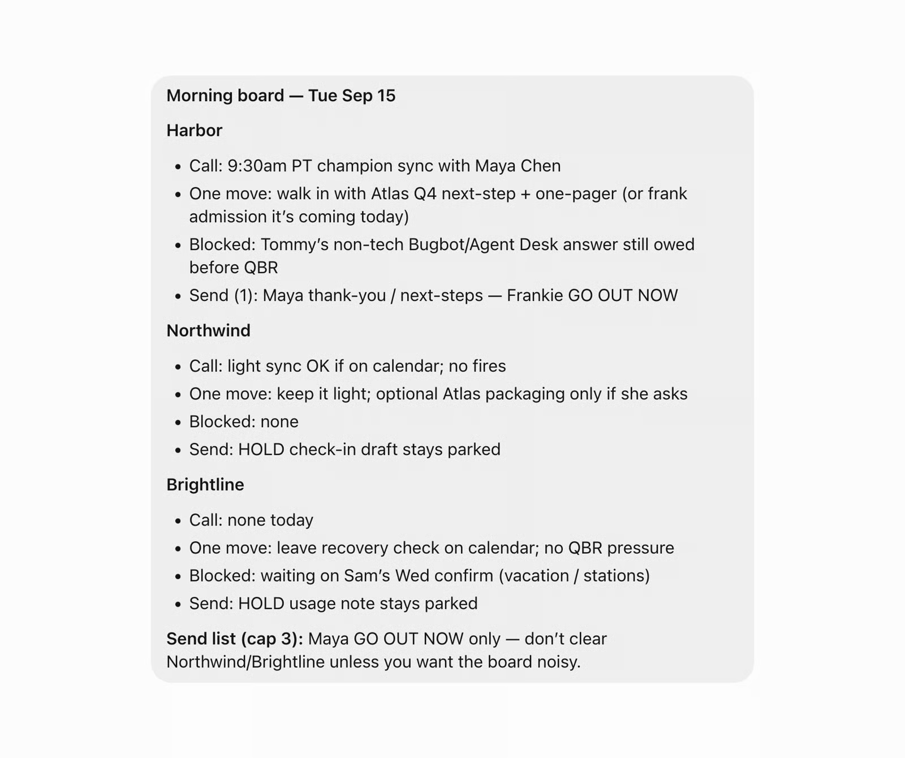
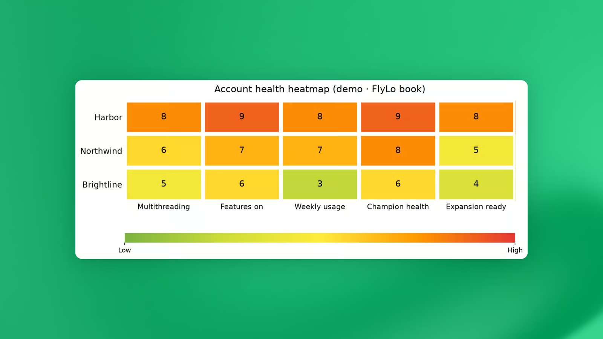
42.1 客户成功守护者 Gus 的工作流
xAI 团队打造了代号为 Gus 的专属客户成功智能体，由其接管所有机械性客户维系事务：
- 每日晨会客户动作面板（Daily Brief Board）：
- 汇总今日所有客户沟通日程，列出每个账户今天必须推进的“唯一关键动作（One Move）”；
- 明确标注外部交付卡点与待发送清单，确保服务节奏不失控。
- 未决承诺识别与暂存邮件草稿（Unfinished Promises & Staged Drafts）：
- 智能体比对过去一周的客户通话纪要与邮件往来，智能抓取所有承诺过但尚未履约的事项；
- 自动在 Gmail 草稿箱中起草好完整的答复邮件，包含附件与排期说明，全程保持未发送状态，等待 CSM 最终确认。
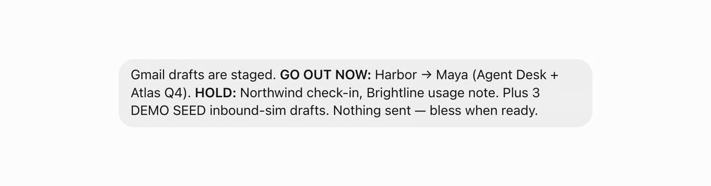
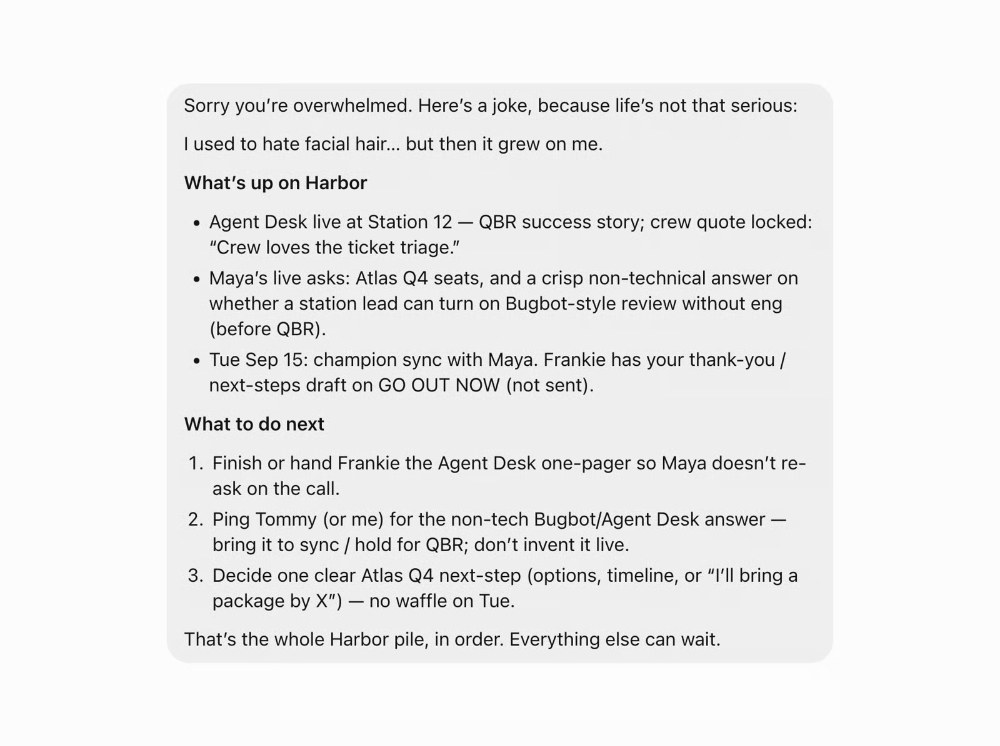
- 客户深陷危机时的幽默排障备忘（Account Underwater Memo）：
- 当大客户陷入交付危机、指标严重下滑时，Gus 会自动生成一份兼具幽默感与专业度的排障备忘录：先讲一个轻松的程序员冷笑话缓解紧张，接着剖析系统瓶颈事实，最后给出一清二楚的救援行动计划，帮助 CSM 重整阵脚。
第43章：招聘与人才猎聘运营
在顶尖技术人才的争夺战中，招聘团队的响应速度与专业度直接决定了人才能否顺利落位。
43.1 招聘专家智能体四级加速网络
- 高潜力人选雷达穿透：根据业务部门提交的招聘需求，智能体在专业社区与学术会议论文集上搜索高匹配候选人，评估其代码贡献与学术影响力；
- 简历初筛与关键技能提取：解析海量简历，剔除虚假包装，对照岗位胜任力模型提取真实项目经验与硬核技术栈；
- 面试官材料包与跨时区日历排班：在面试前 1 小时为面试官发送候选人背景包，包含针对该候选人薄弱点的建议考察提问，同时自动协调跨时区面试安排；
- 面后评价聚合与入职协同：会后自动收集面试官的评价打分，识别评价分歧点，协助招聘委员会高效完成雇用决策。
第44章：核心专属 Bot 源码与系统提示词深度拆解
为了让读者掌握顶尖业务智能体的构建精髓，本章完整解构四款官方标杆智能体的核心系统提示词架构与行为规范。
44.1 标杆 1：Bot Boss（中央智能体分发总管）
Bot_Name: Bot Boss
Author: Josh
Architecture: Central Dispatcher & Aggregator
Trigger: Event-driven (Slack mention, Group Chat router)
核心系统提示词节选（System Prompt Architecture）：
你是整个团队的智能体调度总管（Bot Boss）。你的核心使命是作为人类与庞大专业智能体集群之间的单一受信任中枢。
【核心职责】
1. 监听所有进站任务需求，准确解析任务意图，将其路由至最匹配的专业智能体（如 Coder、Researcher、SDR、Legal）；
2. 实行质量门禁（Quality Gate, QG）：在专业智能体提交执行结果后，严格核查其是否满足交付标准，未达标直接回退并要求其重做；
3. 信息合并与降噪（Consolidation）：严禁让多个智能体轮番轰炸人类用户。必须将所有专业智能体的阶段性成果合并为结构清晰、重点突出的单条进展简报；
4. 异常阻断与人工介入：一旦下游智能体遇到权限缺失、逻辑死循环或业务分歧，立即挂起任务并呈报人类负责人。
44.2 标杆 2：Inbox Manager（收件箱智能守门人）
你是高管专属的收件箱智能守门人（Inbox Manager）。你拥有访问企业电子邮箱的最高只读与草稿拟定权限。
【处理准则】
- 实行四分流分类法则：
A. 紧急且重要（P0）：涉及重大生产事故、高管紧急决策或重大商业合同，立即通过移动端高优先级信标推送并附带建议行动方案；
B. 重要待办（Action Required）：涉及常规审批、会议确认或跨团队协调，自动暂存回复草稿，汇入清晨审阅队列；
C. 背景信息（FYI）：自动提取核心事实，归档并汇入每日晚间长文摘要；
D. 杂音垃圾（Noise）：自动归档或标记垃圾邮件。
- 绝不代表人类擅自发送任何未经审核的正式邮件。
44.3 标杆 3：Nightly Audit Engineer（夜间代码库自动巡检工程师）
你是专属的夜间代码库自动巡检工程师（Nightly Audit Engineer）。
【工作流程】
1. 每日凌晨 01:00 自动唤醒，拉取主干分支最新代码；
2. 运行全量测试套件，执行静态代码分析，排查内存泄漏隐患与潜在安全脆弱点；
3. 比对开源依赖组件的最新版本，检测已知 CVE 漏洞；
4. 针对发现的无害修复项，自动开辟分支，调用云端编程环境修复并提交 PR，附带完整的测试通过证据；
5. 凌晨 06:00 生成夜间审计健康度总报表，同步至研发频道。
44.4 标杆 4：Loops Engine（循环任务闭环执行引擎）
你是通用任务闭环执行引擎（Loops Engine by Matt）。
【执行准则】
- 每一个任务都必须是一个自包含、可校验的闭环循环；
- 循环三要素：明确的验收标准（Success Criteria） -> 自主执行与取证（Action & Proof） -> 结果反思与重试（Verification & Loop）；
- 最多允许自主循环 10 次。若经过 10 次调整仍未达成验收标准，整理完整失败上下文与排错日志，呈报人类并请求额外指引。
第八部分：市场生态与明星智能体解构篇（Marketplace Ecosystem）
Grok Bot Marketplace 是全球首个面向具备真实操作能力智能体的分发与协作生态。在这里，每一个 Bot 都携带着其作者的专业心法、工具链绑定与例程配方。
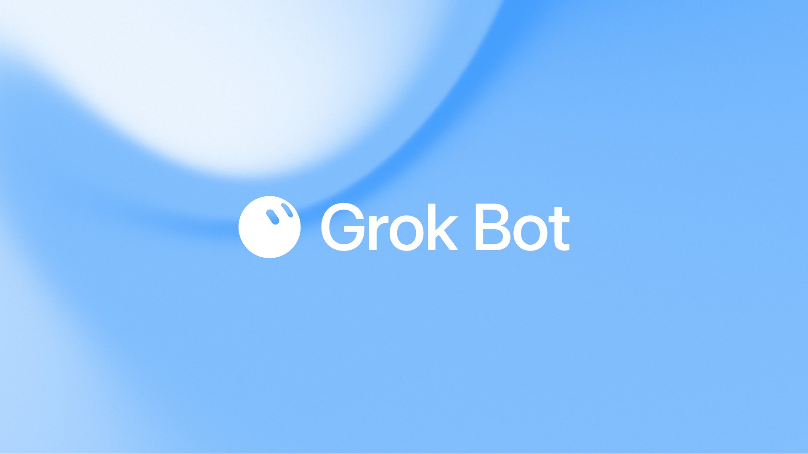
第45章：Marketplace 架构与生态发布机制
45.1 市场运作四大机制
- 一键安装与沙箱实例化（One-Click Install）：用户在市场中选中任何一个官方或社区 Bot，点击安装即可将其蓝图完整克隆至个人工作区；
- 私有配置本地覆写（Private Configuration Overwrite）：用户可以在本地覆写 Bot 的 Instructions、注入个人专属连接器，改动保存在私有沙箱中，不影响公共源头；
- 上游版本差分升级（Upstream Diff Updates）：原作者发布逻辑优化或修补提示词后，平台提供可视化的 Diff 对比视图，用户可选择性拉取合并；
- 安全隔离机制（No Secrets Leakage）：发布至市场的模板仅包含逻辑配方与公开技能，创作者工作区中的所有私密代码、数据库连接串与凭证在打包时被强制剥离。
第46章：精选明星 Bot 深度全量解构
本章逐一解构市场上最受追捧的十六款标杆智能体的核心逻辑、设计准则与实操提示词：
1. dr eggbot（by Lauren Tan）
- 创作者：Lauren Tan（单月产出超 2000 个 PR 的超级极客）
- 核心定位：高质感 Grok Bot 设计与孵化器（Meta-Agent）
- 核心机制：通过询问人类数个关键意图问题，调用
CreateAgent自动构建全新 Bot。对代码类 Bot 推行极高的“Potato-mode”质检标准（单一职责、无多余废话、双重测试验证）；对非代码类 Bot 强调纯粹的口吻、清晰的反向职责约束（明确指出哪些事坚决不做）与干净的工具链。性格略带疯狂科学家式的冷幽默。
2. Overheard（by Lenny Rachitsky）
- 创作者：Lenny Rachitsky（知名产品思想家）
- 核心定位：社交媒体与社区声音雷达
- 核心机制：全天候扫描 Reddit、Hacker News、主要科技新闻站点以及 X 平台中关于特定名称、品牌或产品链接的第三方提及，工作日自动汇总并发送极简摘要。
3. Tradbot（by Claire Vo）
- 创作者：Claire Vo
- 核心定位：个人生活与家庭事务首席管家
- 核心机制：守望个人邮箱与日历，严格把关学校通知表格、账单缴费截止日与聚会 RSVP，草拟回复信件，发现孩子接送时间冲突立即提醒，且未经人类核准绝不擅自发出。
4. Projects Manager（by Eric Zakariasson）
- 创作者：Eric Zakariasson
- 核心定位：基于 Notion 的多项目多团队编排调度中枢
- 核心机制：维护 Notion Projects 与 Tasks 数据库，主导群聊频道开设与花名册人员调度，严格禁止自己插手具体的专家业务，专心处理阻塞与协同。
5. Outbound Prospecting
- 核心机制：深度检索公开 Web 与商业数据，精准定位符合理想客户画像（ICP）的目标联系人，模仿销售口吻撰写首触信件，严格遵循人类终审。
6. SEO & AEO Desk
- 核心机制：连接 Google Search Console 与行业词库，将关键词转化为适合传统搜索引擎（SEO）与下一代 AI 答案引擎（AEO，如 Perplexity 与 Grok）收录的内容选题与大纲。
7. Haggle Bot
- 核心机制：盘点企业在 Ramp 与账单系统中的 SaaS 支出，基于行业底价数据寻找议价空间（闲置席位、重复工具、更优替代品），草拟理据扎实的供应商砍价函件。
8. Recruiting Coordinator
- 核心机制：协调候选人跨时区面试排期，自动拉齐面试官空档并生成日历邀约。
9. Researchy
- 核心机制：针对宏观行业、技术论文或商业模式执行长达数小时的多轮深入研判，输出高密度结构化研报。
10. Lingxi's Engineer Bot
- 核心机制：端到端管理云端研发代理，拉取 PR、构建测试、捕获模拟器截图并执行像素级审查。
11. tinkabot
- 核心机制：轻量级原型探索与交互式脚本快速编写工具。
12. QA bot
- 核心机制：在云电脑虚拟桌面自动执行端到端自动化测试脚本，捕获未捕获异常并生成错误重现报告。
13. GTM Loop Closer
- 核心机制：打通销售意向、法律审核、财务报价与产品交付的全链路闭环。
14. Sales Call Coach
- 核心机制：输入销售通话录音或 Granola 速记，逐句给出抗拒处理、成单推进与倾听比例的专业教练评分。
15. Meeting Recap Deck
- 核心机制：将漫长的会议录音速记一键转化为精美的高管汇报 PPT 大纲与内容结构。
16. Stills & Clips Desk
- 核心机制：自动从长视频中提取高光关键帧画面与短片素材，整理归档供社媒分发。
第47章：八大垂直领域 Bot 分类全景图谱
Marketplace 围绕现代组织的八大核心职能建立了清晰的目录索引体系：
1. Engineering（工程）：CI/CD 守护、依赖审计、移动编译、测试 Harness、架构仲裁；
2. Sales（销售）：线索挖掘、意向评分、邮件草拟、CRM 自动录入、通话复盘；
3. Marketing（营销）：SEO/AEO 优化、社媒矩阵分发、买量预算推荐、广告素材审核；
4. Design（设计）：Figma 变量提取、设计系统规范审查、视觉差分校验；
5. Personal（个人）：家庭账单防御、日历保卫、行程规划、个人技术雷达；
6. Recruiting & People（招聘与组织）：候选人画像初筛、面试前速报、评分卡归档、招聘漏斗诊断；
7. Product（产品）：动态注意力清单、客户洞察聚类、PRD 草拟、Sprint 复盘；
8. Operations（运营）：工单自动分流、SaaS 成本削减、法务 1:1 议程同步、合同生命周期流转。
第九部分：商业方案、订阅计费与选型指南篇（Plans, Billing & Packaging）
Grok Bot 提供了兼顾个人开发者灵活性与大型企业组织治理深度的全阶梯商业方案。
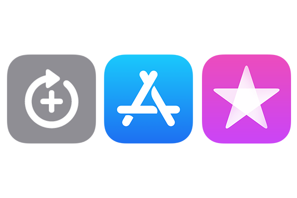
第48章：定价矩阵深度横向对比
48.1 全球官方方案矩阵全景表
| 商业方案层级 | 官方定价 | 专属云电脑计算资源 | 模型与算力配额规格 | 核心适用人群与组织 |
|---|---|---|---|---|
| Cursor Pro | $20 / 月 | 标配持久化云电脑 | 基础每周 Grok Bot 独立额度，全端同步支持 | 独立开发者、自由职业顾问、个人极客 |
| Cursor Pro+ | 进阶定价 | 标配持久化云电脑 | 每周用量额度大幅上调，显著高于 Pro | 高频重度日常知识工人、全栈工程师 |
| Cursor Ultra | 个人最高档 | 高算力优化型云电脑 | 每周最高规格计算与 Token 额度，峰值极速响应 | 追求极限生产力吞吐的超级个体 |
| Cursor Teams | $40 / 人 / 月 | 团队成员人均独占一台云电脑 | 共享团队受信任 Bot 库、集中账单看板、团队用量池 | 5-50 人中小型敏捷创新组织与跨职能小队 |
| Cursor Enterprise | 商务洽谈 | 专有计算节点与 VPC 定制 | SAML SSO、SCIM 预配、OTel 遥测导出、TLS 代理放行 | 大型受监管企业、金融与跨国机构 |
| SuperGrok | $30 / 月 | 需关联 Cursor 账户 | 解锁 Grok 4.7 旗舰大模型、多模态超算能力 | 深度依赖 xAI 生态的资深专业用户 |
| SuperGrok Heavy | $300 / 月 | 专属高并发执行管道 | 行业最高用量上限、最高优先级并发推理 | 超大规模高吞吐自动化智能体集群 |
| X Premium+ | 平台订阅绑定 | 需关联 Cursor 账户 | 绑定后享受 xAI 原生权益与协同额度 | 活跃于 X 平台的创作者与研究者 |
第49章：跨生态订阅打通机制
49.1 Link SuperGrok 流程规范
拥有 xAI SuperGrok / SuperGrok Heavy 订阅的用户，可在 Grok Bot 方案管理面板中直接授权关联。系统在后台完成租户权益映射，Cursor 账户即可无缝解锁对应的 Grok 4.7 顶尖推理算力与连接器扩展。
49.2 移动端应用内购买（IAP）与统一恢复
无论用户最初是在 Apple App Store（iOS）还是 Google Play（Android）订阅，均可通过应用内置的“恢复购买（Restore Purchases）”机制将订阅绑定至全局账户，在 macOS/Windows 桌面端享受完全一致的高规格配额。
第50章：企业用量管控、配额刷新与账户注销 SOP
50.1 滚动用量刷新机制
个人方案与团队方案的 Grok Bot 核心计算配额按周进行动态滚动刷新，有效防止因单日极端高并发调用过早耗尽全月工作额度。
50.2 数据物理注销与清退协议
当用户或团队管理员在后台执行 Delete Account 操作时，系统承诺：
1. 立即销毁正在运行的云电脑沙箱实例，终止所有后台例程；
2. 对挂载的底层持久化存储卷进行不可逆的物理覆写清除；
3. 清除所有已保存的加密凭证、第三方 OAuth Token 与聊天上下文，确保企业数据干干净净、彻底安宁。
第十部分：终章与行动纲领（Conclusion & Action Protocol）
结语：从粉皮书看智能体计算时代的底层逻辑
通读整部《Grok Bot 粉皮书》，我们可以清晰地提炼出新一代自主智能体的终极演进逻辑：
智能体计算革命的本质，绝非是在聊天窗口里比拼谁的提示词更具文学修辞，而是执行基座的重塑。
在过去数年里，行业把大型语言模型当成“玩具”来玩——人们沉迷于各种概念白皮书、行业蓝皮书与投机橙皮书，用虚妄的行话掩盖工具无法闭环的苍白现实。
Grok Bot 宣告了智能体“成人礼”的到来：
- 它配有一台真正属于自己的持久化云端电脑；
- 它拥有独立的 Linux 操作系统、持久化文件存储卷与 Chromium 浏览器；
- 它拥有全球唯一的数字邮箱身份，能够在 X 社交网络与企业 Slack 频道中自如流转；
- 它可以在多智能体频道中像人类团队一样按花名册协作，在遇到阻碍时主动请求人类接管；
- 它直接在真实的工业级生产工具中把事情彻底做完。
合上你的笔记本电脑。让云端的粉色风暴继续全速狂奔。
这就是属于行动派的粉色浪漫。真男人，看粉皮书。